유독 내 목소리가 귀에 걸린다. 말이 빨라지고, 호흡이 거칠어진다. 목소리만 듣고 있는데도 어제의 내 모습이 그려진다.
여유롭지 못하고 긴장된 모습들이 여실히 드러났다.
'시야가 너무 좁구나..' '내 프레임 안에서 나를 방어하기에만 급급했구나..'
1
찬바람이 부는 어느 늦가을. 대장님께서 메시지를 주시고, 잠원역으로 향한다.
민브로님과 함께 보신다는데, 지난번도 그렇고 정말 감사하게도 나를 함께 불러주셨다.
'벌써 1년 전이구나'
반포 양자강에 들어섰을 때 느꼈던 민브로님의 무게감과 안정감이 떠오른다.
서두르지 않는 동작, 느린 호흡, 말씀 하나하나에 담긴 무게감.
끊임없이 술잔과 물잔을 살피시고, 물을 따라주시며 건네셨던 "뜨겁습니다."라는 말씀까지.
그날의 복기를 다시 읽어보니 대화 속에서 민브로님께서 조절하시던 템포와 호흡, 그날의 분위기가 다시 떠오른다.
긴장감을 유지하면서도 여유를 잃지 않는 모습.
이번 만남에서는 그런 것들을 더욱 유심히 관찰하고 싶었다. 그런데 그것보다 더 큰 것을 얻었다.
작년에는 민브로님의 호흡을 관찰했다면, 올해는 나의 호흡을 관찰하게 되었다.
작년에는 미처 발견하지 못했던 나의 부족함과 그 부족함이 어느 정도인지를 느낄 수 있었던 하루였다.
2
이날도 지난번처럼 잠원역에서 신사역까지 함께 걸어가며 여러 가지 말씀을 해주셨다.
도로 하나를 사이에 두고 달라지는 상권. 골목 안쪽에 자리 잡은 오래된 호텔. 술집이 보이지 않는 아파트 주변의 상가들.
혼자 걸었다면 무심코 지나쳤을 풍경들이다.
한참을 걷다가 감자탕집에 들어갔다. 뜨끈한 감자탕 국물과 묵은지 뼈찜. 소스에 찍어 먹는 고기의 맛도 좋았다.
저녁에는 오래된 통닭집에 들어갔다. 바삭한 튀김옷을 한입 베어 무니, 잘 밴 염지의 짭조름한 맛과 갓 튀긴 통닭의 고소함이 입안 가득 퍼진다.
골목을 걷고, 음식을 먹고, 술잔을 기울이며 대화를 나눈다.
그 모든 순간에 배움이었다.
모든 것에는 흐름이 있었고 맥락이 있었다. 골목 하나하나에도, 건물 하나하나에도, 음식점 하나하나에도, 심지어 그때그때 먹을 메뉴 하나에도.
분명 같은 길을 걷고 있는데, 서로 다른 세상을 보고 있었다.
이날 내가 느낀 것은 그 흐름과 맥락이었고, 내가 세상을 얼마나 좁게 바라보는지 느끼는 시간이었다. 그리고 그것을 읽어내고 대응하는 것이 사업가라는 생각이 들었다.
3
마지막 술자리에서는 먹태 하나를 두고 긴 대화가 이어졌다.
민브로님께서 어떤 말씀을 하시면, 나는 그 말씀을 이해하기에 앞서 나를 설명하려고 했다.
내가 왜 먹태를 주문했는지, 내가 왜 그렇게 생각했는지, 내가 왜 그렇게 행동했는지, 끊임없이 나를 변호하고 있었다.
대장님께서 말씀주셨다.
“사실 바둑판 되게 넓잖아요. 근데 그걸 못 보는 거 같은 느낌?”
바둑판은 그렇게나 넓은데, 나는 내가 놓은 돌 하나를 지키기에 급급했다.
그 돌을 지키려고 애쓰는 동안 바둑판 전체에서 어떤 일이 벌어지고 있는지는 보지 못했다.
최근 내가 가장 많이 공부하고 있는 것이 영업이다. 고객을 이해해야 한다고, 고객의 결핍을 알아야 한다고, 고객의 입장에서 생각해야 한다고 말해왔다.
그런데 정작 내 앞에 있는 사람과의 대화에서는 그러지 못하고 있었다.
상대방을 앞에 두고 나만 바라보고 있었다. 참 이상한 일이다.
4
대장님께서는 나의 직선적인 모습을 말씀주셨다.
“영업을 하라고 하면 딱 영업만 해요.”
무언가에 몰입하는 것이 나의 장점이기도 하지만, 그것에 몰입하는 순간 다른 것들이 보이지 않는다는 것이다.
생각해 보면 어제 하루에도 수많은 장면이 있었다.
농담을 던지는 순간에도, 메뉴를 고르는 순간에도, 대화를 나누는 순간에도 나의 직선적인 모습이 계속해서 드러났다.
나는 영업을 할 때만 영업을 공부하고 있었다.
크리스 커너의 영상도 보고, 탁재훈론, 위트, 능청, 대장님의 말씀을 분석하는 등 여러 가지를 공부하고 있지만,
결국 현장에서 사람과 직접 부딪히고, 예상하지 못한 상대의 반응을 받아내고, 그 순간의 흐름과 맥락에 맞게 대응하는 것은 전혀 다른 영역임을 알게 된 하루였다.
머리로는 유연함을 공부하고 있었지만, 정작 사람을 마주했을 때의 나는 너무나 직선적이었다.
위트와 능청을 공부하고 있었지만, 정작 내 프레임을 조금만 벗어나도 여유를 잃어버렸다.
내가 이해한 것과 내가 할 수 있는 것 사이에는 생각보다 훨씬 큰 간극이 있었다.
책을 아무리 많이 읽어도 느끼지 못하는 것들이 있고, 현장에서 사람들과 부딪혀도 보이지 않는 것들이 있다.
그래서 나보다 경험이 많은 사람을 뵙고, 그 사람의 시선으로 나를 바라보는 시간이 필요하다.
1년 전에도, 1년이 지난 이번에도, 대장님께서 민브로님과 함께 나를 불러주신 이유가 있었을 것이다.
이번 만남을 통해 1년 전 내가 보고, 듣고, 느꼈던 것들이 얼마나 좁았는지를 느낀다.
최근 영업을 나가면서 오히려 더 직선적인 모습이 나오기도 했다. 어쩌면 원래 내 안에 있었지만, 내가 미처 발견하지 못했던 모습들일 것이다.
좁은 시야, 거친 호흡, 고집과 아집, 나를 방어하려는 태도.
그것들이 사람과 부딪히는 과정에서 하나씩 모습을 드러낸다.
그런데 그것이 드러난다고 해서 내가 그것을 발견할 수 있는 것은 아니었다.
어제의 시간이 없었다면, 나는 그것을 영업에 대한 열정이나 몰입이라고 착각하며 살아갔을지도 모른다.
지금은 내가 사람을 만나고, 영업을 하고, 세상 밖으로 나가려는 시기이다.
바로 이 시기에 내가 무엇이 부족한지를 발견하고, 어떤 모습을 보고 따라가야 하는지에 대한 감각을 얻었다는 것이 너무나 감사하다.
앞으로 사람을 만나면서 어떻게 해야 할지 모르는 순간들이 얼마나 많을까.
그럴 때마다 어제의 대화를 떠올려보자. 민브로님의 호흡과 여유, 상대의 말을 받아내는 모습, 흐름을 바꾸어가는 모습을 떠올려보자.
그 모습을 조금이라도 따라 해보고, 그 모습에 나를 비추어보며, 나를 객관화할 수 있는 기준을 선물받은 것이니까.
나보다 경험이 많으신 분들 사이에서, 나 스스로는 발견하지 못했던 부족함을 발견하고, 그것을 짚어주시고, 어떻게 해야 하는지를 실시간으로 보고, 듣고, 느낄 수 있다는 것.
얼마나 다행이고 감사한 일인가.
그런 시간을 만들어주신 대장님, 민브로님, 해량님께 감사드린다.
이제는 더 많은 사람을 만나고, 더 다양한 상황에 나를 놓아보자.
그 과정에서 어제 얻은 감각들을 하나씩 내 것으로 만들어가자.
1년 전에는 민브로님의 여유로운 호흡을 보았다. 1년이 지난 어제는 나의 거친 호흡을 들었다.
다시 1년이 지났을 때는 지금과는 다른 나의 호흡을 들을 수 있도록 하자.
그것이 내가 해야 할 일이고, 어제의 시간을 의미 있게 만드는 일이니까 말이다.
2026. 11. 27.
2026년 11월 26일, 늦가을 오후.
잠원의 단지에서 시작해 신사동 골목을 지나 자정을 넘겨 헤어졌다.
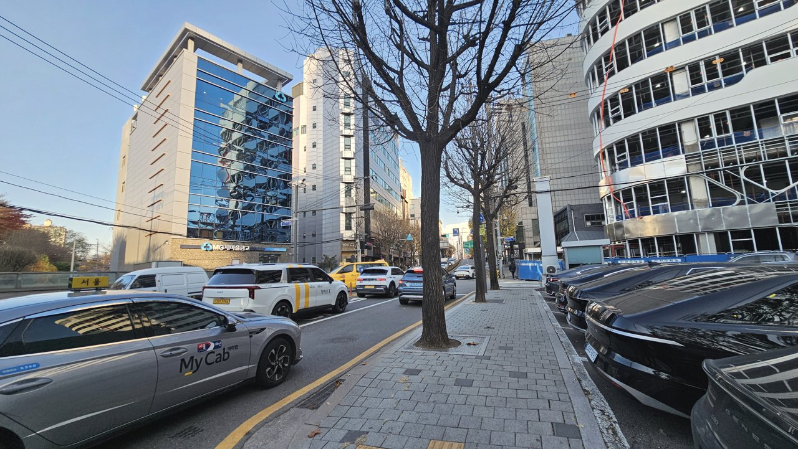
HOW TO READ
이 책에 대하여
그날 오전, 대장님에게서 메시지가 왔다.
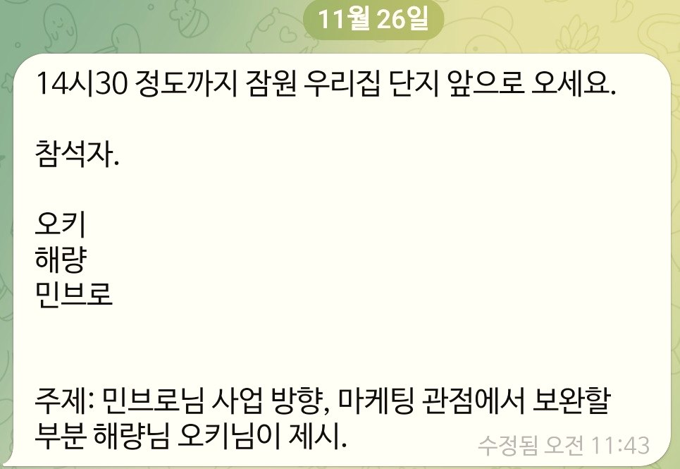
11월 26일 오전 11시 43분, 대장님의 메시지
나와 민브로님이 먼저 도착했고, 해량님은 저녁 무렵 감자탕집에서 합류했다. 그렇게 시작한 하루는 다음 날 늦은 밤 0시 34분까지 계속 이어졌다.
따옴표 안의 말은 그날 실제로 녹음된 말이고, 옆의 작은 꼬리표는 그 말이 녹음된 시각과 위치다. 음성인식으로 받아 적어 잘못 들린 말이 있을 수 있고, 시끄러운 식당에서는 누가 한 말인지 분명하지 않아 '누군가', '멤버 한 사람'으로 쓴 곳이 있다. 녹음에 없는 일은 쓰지 않았다. ▶ 표시가 있는 상자를 누르면 그 대목의 녹음을 들을 수 있다(「영상」 폴더를 이 파일과 같은 곳에 두어야 재생된다).
그날의 약속은 대장님의 공지 한 줄로 정해졌다. 오후 두 시 반쯤까지 잠원, 대장님네 단지 앞으로 올 것. 부른 사람은 나, 해량님, 민브로님이었고, 주제는 민브로님의 사업 방향, 그리고 마케팅 관점에서 보완할 점을 해량님과 내가 짚어 주는 것이었다. 해량님은 조금 늦게 오기로 해서, 단지 앞에 먼저 모인 사람은 대장님과 나, 민브로님 세 사람이었다.
첫 화제는 내 코트였다. 대장님은 어디서 샀느냐고 묻고는 옷의 질을 알아보는 법부터 풀어 놓았다. 좋은 옷은 같은 종류 중에서도 얇은데 가볍고 따뜻하고, 질이 떨어지는 옷은 축 늘어지면서 추워 보인다고 했다. "두꺼운데 추울 것 같은 느낌이 든다는 거지" 띠어리나 버버리에 가서 같은 형태의 롱코트를 보면 확실히 훨씬 얇다. 그 차이를 두고 대장님은 "입는 사람은 잘 몰라"라고 했다. 보는 사람은 단번에 안다는 것이었다.
사이즈 이야기도 이어졌다. 소매가 맞지 않는 건 어깨 때문이라고 했다. 어깨가 맞아야 소매가 올라오고, 어깨가 안 맞으면 소매가 내려가 버린다. 대장님은 옛 항공점퍼를 복각하는 리얼맥코이의 무스탕을 예로 들며 그런 옷은 "사실 그 옷을 버틸 수 있어야 돼요"라고 했다. 몸이 얇은 사람이 입으면 무겁게 느껴지고 어울리지 않는다는 것이었다. 내 코트도 어깨가 받쳐 주지 않아 길고 크다고 했다.
"약간 AI 같아 지금" — "AI로 생성한 사람 같애"
내가 코트를 다른 걸로 사겠다고 하자, 대장님은 굳이 새로 사라는 말이 아니라고 했다. "핵심은 어깨를 맞춰야지" 어깨가 맞는다는 말에는 두 가지 뜻이 있었다. 하나는 넓이, 다른 하나는 두께, 곧 승모근이다. 승모근이 있으면 몸통이 두꺼워지면서 소매도 따라 올라간다. 타고나기를 어깨가 좁은 사람이라면 승모근을 키우면 옷 입을 때 확실히 달라진다고 했다.
"상체에서 가장 중요한 건 내 생각엔 승모야 … 남자들이 의외로 복근이랑 팔뚝만 신경을 많이 쓰거든" 피트니스 모델을 할 게 아니니, 승모근 위주로 하다 보면 복근이나 팔뚝은 어느 정도 따라온다고 했다.
15:03 · 어깨를 맞춰야 소매가 맞는다2분 17초
ii3킬로미터까지는 천천히
복근 이야기는 달리기로 넘어갔다. 대장님은 모임에서 아직 하지 않은 이야기라며 런지를 꺼냈다. 달리기 전에 허리를 돌려 주는 런지로 코어를 자극해 두면, 달릴 때 상체가 부하를 받으며 몸이 통으로 움직인다. "그거 자극을 한 다음에 달리면 코어로 달리거든" 그렇지 않으면 대부분 발목과 종아리, 기껏해야 허벅지로 달린다고 했다.
"스위치를 켜고 하는 거네요?" — "그렇죠, 스위치 켜서 하는 거지"
오래 할 필요도 없었다. 3분에서 5분이면 된다. 대장님은 달리기 자체가 생각보다 코어 운동이 많이 된다며, 3킬로미터를 빨리 뛰어 20분 코어를 쓰는 것과 5킬로미터를 느리게 뛰어 1시간 쓰는 것 중 무엇이 낫겠느냐고 물었다. "후자가 좋지" 느리게 달리면 운동하는 시간이 늘어난다는 것이었다.
대장님은 그날 아침에도 7킬로미터를 뛰었다. 발목이 안 좋은 상태였지만 5킬로미터까지 천천히 가고 마지막 구간에서 속도를 내 보니 페이스가 다시 5분대로 들어왔다고 했다. GPT가 자꾸 쉬라고 하는데도 쉴 수 없는 이유는 이랬다. "내가 여러분한테 쉬지 말라고 했는데 내가 쉬면 또 그러잖아"
조금만 뛰려고 나가도 조금만 뛸 수가 없다고 했다. 3킬로미터를 넘기면 몸이 풀리기 때문이다. 대장님은 오기 전에 AI와 대화하며 정리한 생각을 꺼냈다. 처음부터 슬로우 조깅을 하면 그것 자체가 몸풀기라 따로 몸풀기가 필요 없다는 것이다. "3키로 넘어가면 여기가 부드러워져요 피가 돌아" 대장님은 그게 생리학적으로도 맞더라고 했다. 그렇게 3킬로미터에서 몸이 풀리면 5킬로미터는 기본으로 달릴 수 있게 된다. 대장님이 본 논문에 따르면, 선수가 아닌 마흔 넘은 일반인이 하루 5킬로미터를 달리면 상위 1%라고 했다.
15:09 · 슬로우 조깅이 곧 몸풀기1분 39초
"다 벽이 3이에요" — "아 이게 왜 이사람이 벽들이 3일까? 3까지 절대 느리게 안 뛰고 있어"
대장님의 진단은 간단했다. 말한 대로 느리게 뛰지 않아서라는 것이다. 대장님이 말하는 진짜 느림은, 그날 아침 3킬로미터를 뛰는 동안 빨리 걷는 아주머니들이 옆을 다 지나쳐 갈 정도의 속도였다. 1킬로미터에 11분. "11분 진짜 느려야돼" 그렇게 3킬로미터를 시작하면 그 뒤로는 알아서 조금 빨라지며 2킬로미터쯤 더 가게 되고, 그렇게 5킬로미터가 된다고 했다.
처음부터 빨리 뛰려고 하면 "부담이 되고 자괴감도 생기고" 결국 못 나간다. 대장님 자신의 이야기였다. 달리기를 하지 않던 시절에는 아파트 단지 한 바퀴, 1킬로미터 남짓한 길에서 500미터만 가도 힘들었다고 했다. 랩을 빨리 돌아야 한다고 잘못 생각했던 것이다. "그걸 되게 빨리 돌아야 된다고 생각을 했던 거야" 한 번 안 되니 "다음날부터 달리기가 싫은 거야". 민브로님도 자기도 그랬던 것 같다고 했다.
부담을 가장 줄이는 방법도 일러 주었다. 어디서 어디로 이동할 때 0.5킬로미터라도 슬로우 조깅을 하는 것이다. 걷는 것보다 느려도 발이 떨어지는 조깅은 걷기와 "완전 다른 운동이라고요." 대신 기록이 따라붙어야 했다. "그냥 하면 안 되고 항상 가민을 켜시고" 카운팅이 되게 해야 한다고 했다.
15:11 · 다들 벽이 3km인 이유2분 13초
iii.매일 차는 시계
민브로님은 갤럭시 워치만 있다고 했다. 대장님은 예전에 쓰던 포러너를 충전해 두었다며 민브로님에게 주겠다고 했다.
갤럭시 워치를 권하지 않는 이유는 배터리였다. 이런 시계는 늘 차고 있으면서 걸음 수와 바디배터리를 다 잰다. 잘 때나 샤워할 때 빼면 심박도, 리듬도 끊긴다. "어차피 이 시계는 맨날 차라고 나온 시계지" 처음엔 불편해도 두 달쯤 참고 차면 찼는지 안 찼는지 의식이 안 된다고 했다. 이어폰은 하루만 가면 되지만 시계는 다르다. "빼야되는 행위 자체에서 이미 패턴이 뭉개진단 말이야." 가민은 한 번 충전으로 25일에서 28일을 가니, 거의 잊을 때쯤 한 달에 한 번 충전하면 된다.
대장님은 자기 시계를 두고 "근데 이거 안 아깝지. 왜냐면 매일 끼는데."라고 했다. 시계는 수면의 질을 보고 그날 얼마나 뛰는 게 좋을지를 정해 준다. 이번 주에 10킬로미터, 7킬로미터를 뛴 대장님의 시계에는 회복 시간 34시간이 떠 있었다.
가민 이야기는 브랜드 경쟁으로 번졌다. 가민은 한때 순토와 경쟁했고, 고프로는 DJI와 경쟁했다. 지금은 아무도 고프로 이야기를 하지 않는다. "한쪽이 완전 말려 죽여버린거거든" 가민은 원래 항공 GPS를 만드는 회사라 GPS 기술이 좋았다.
"그러면 순토같은 경우에는 gps기능이 떨어지는?" — "아니야 그건 아니야."
갈린 지점은 기술이 아니라 고객이었다. 러너가 늘어나는 수요에 가민이 올라탔고, 고객의 피드백을 얼마나 잘 들어주느냐에서 차이가 났다. "고프로가 망한 이유가 사실 피드백이 너무 느렸거든" 잘나가던 1등도 그렇게 밀려난다는 것이었다.
15:16 · 시계는 빼는 순간 패턴이 뭉개진다1분 47초
iv.사는 사람에게 배운다
그때 단지 안에 한 무리가 모여 있었다. 민브로님은 층을 보는 모습이 카페에서 모여 임장을 온 것 같다고 했다. 무리에서 단지 시설을 두고 이런저런 말이 들려오자, 대장님은 늘 하던 이야기를 다시 꺼냈다. "제일 쓸데없는 지적을" 그런 말은 "여기 사는 사람한테 들어야지"라고 했다. 사는 사람도 아닌 이들끼리 와서 보는 건 의미가 없다는 것이다.
커뮤니티 시설이 좋은 건 지방의 자이 단지도 마찬가지고, "그거는 핵심이 아니잖아". 대장님이 꼽은 핵심은 입지였다. 여기서 걸어서 어디로 가는지, 신사역까지 어떻게 이어지는지 같은 것들이다. 그 무리는 커뮤니티 안으로는 들어갈 수 없으니 밖에서만 보다 가야 했다. "배울거면 나처럼 사는사람한테 배우는게 낫지만" 주민이 지인을 데려와 안에서 보여 주는 투어라면 의미가 있다고 했다.
조경 이야기도 나왔다. 이곳 조경이 좋다고들 하지만 아직은 덜 자랐다. 다 큰 나무를 옮겨 심은 게 아니기 때문이다. "이게 다 된 걸 심는 게 아니라고 키우는 거야" 20년이 넘은 반포자이가 울창한 것처럼 이곳도 작년보다 훨씬 울창해졌고, 5~6년이면 그렇게 될 거라고 했다.
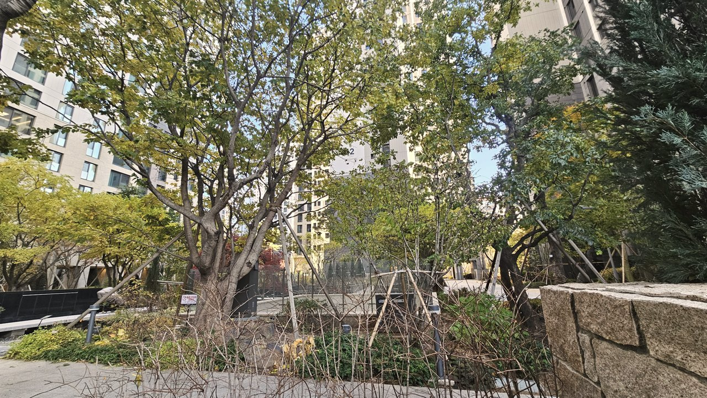
단지 안 정원
지하 도서관 이야기를 하다가 화제는 보험으로 옮겨 갔다. 예전에는 외부인을 데려갈 수 없던 곳인데, 요즘은 중앙광장 같은 데까지 들어와 보험을 파는 사람이 있다고 했다. 대장님의 결론은 이랬다. "보험이라는게 사람보고 하는 거거든" 핸드폰도 마찬가지였다. "갤럭시 보고 사냐고 아니지 사람 보고 사는거야" 전국에서 파는 갤럭시는 다 같고 가격도 비슷하니, 결국 파는 것은 자기 자신이라고 했다.
어르신들이 알뜰폰과 공기계를 두고도 매장에서 휴대폰을 사는 이유도 같은 데 있었다. 자식들이 알려 줘도 안 하신다. "몰라서 그런 게 아니야." 공기계를 사면 뭘 물어볼 데가 없다는 감각, 그리고 SK 번호가 좋다는 오래된 믿음이 있다. 011을 끝까지 바꾸지 않던 어르신들처럼. 어른들이 몰라서 그럴 거라고 여기는 그 틈에 시장이 있다고 했다.
차 이야기는 짧게 지나갔다. 대장님은 내년에 단종되는 사이버트럭을 고르는 중이었다. 단종되면 희소가치가 생기고, 되팔면 보증금 같은 개념이 된다는 계산이었다. 부자들은 남과 달라 보이고 싶어 한다는 말도 덧붙였다. X5는 그 급 SUV에서 더 갈 데가 없는 차라고 했다. "근데 X5는 약간 육각형이라고."
대장님이 점심으로 뭘 먹고 싶은지 물었다.
Pace
"아무거나 괜찮습니다" — "이럴 줄 알았어"
대장님은 집에 민브로님에게 물어보겠다고 말해 두었다고 했다. "그분은 주체성이 있어서 얘기할거야"라고 했다는 것이다. 그러고는 다시 주문했다. "뭐 있는거 없는거 상관없이 본인이 먹고싶은거 한 3개만 얘기해봐" 고기가 먹고 싶다는 말이 나왔고, 나는 뼈해장국을 먹고 싶다고 했다. 대장님은 두 곳을 내놓았다. 뼈찜과 뼈해장국이 같이 나오는 숯불구이집, 그리고 오래된 옛날 감자탕집. 뼈찜집에서 국물도 판다는 말에 뼈찜으로 정해졌다.
v알고 걸어야 보이는 동네
대장님은 단지를 안내했다. 길 건너편이 2단지였다. 한 아파트가 빠지는 바람에 통합 건축을 못 해 도로를 사이에 두고 나뉘었다고 했다. 골프장과 수영장, 식당 같은 커뮤니티 시설은 2단지 쪽이 더 메인이었다. 커뮤니티 식당에서는 점심과 저녁이 다 나오고, 32층에는 한강이 보이는 카페가 있다고 했다.
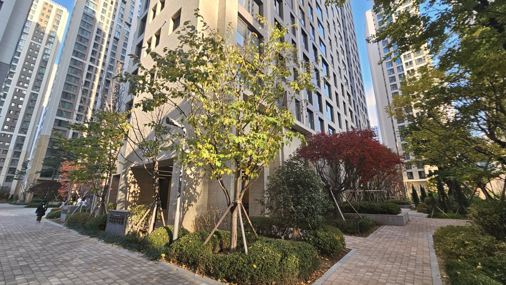
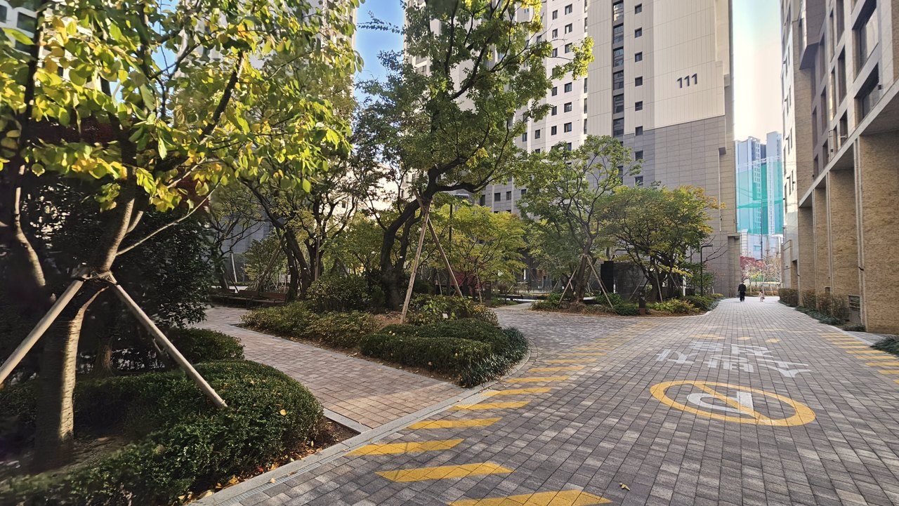
단풍 든 산책길 · 단지 안 보행로
놀이터 앞에서 민브로님은 짚라인이 있는 놀이터는 처음 본다고 했다. 여름이면 물이 쏟아지는 놀이 시설도 있었다. 대장님은 이 단지가 아이들이 보드 타기 좋은 이유를 짚었다. "여기는 차가 없잖아, 애초에." 차가 단지 안을 돌아다니는 아파트에서는 아이들이 보드를 탈 수 없다. 나는 내가 사는 곳에는 이런 게 아예 없다고 했다.
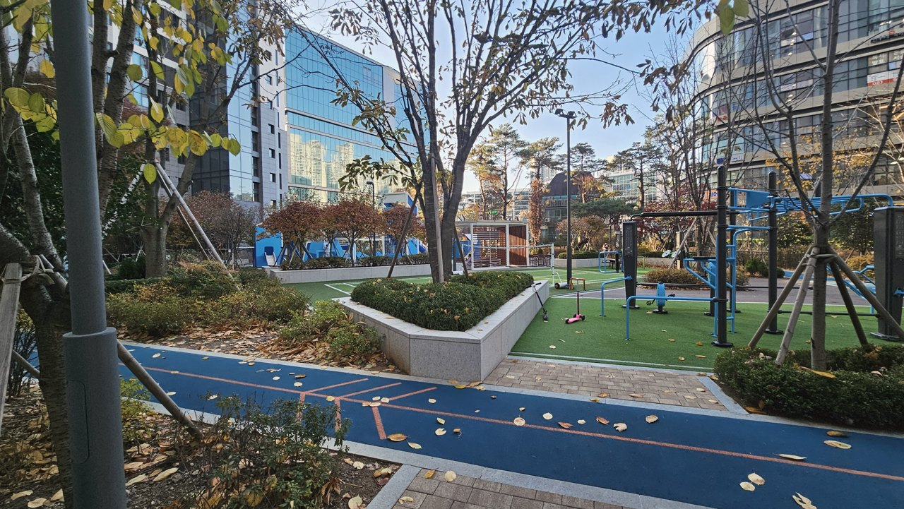
놀이터가 있는 마당
테니스장 건물 앞으로 메이플자이 상가가 있었고, 상가를 지나면 바로 잠원역, 반대쪽으로 가면 반포역이었다. 단지 사이를 오가면 두 역에 다 닿고, 다리를 건너면 바로 다른 동네였다. 도로 하나를 두고 분위기가 달라진다는 이야기에 내가 "도로 하나 차이인데"라고 하자 대장님은 "저쪽으로 갈 일이 없어요"라고 했다.
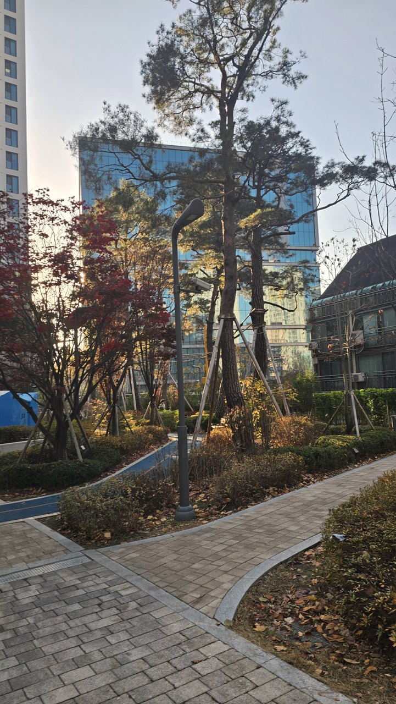
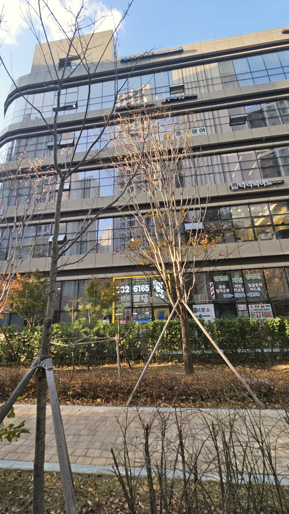
소나무와 단풍길 · 단지 상가
상가 앞에서 대장님은 한 칸을 가리켰다. "내가 저기를 일부러 한거야" 알박기를 한 자리라고 했다. 약국 하나가 병원 한두 곳을 몰고 들어오는데, 병원이 들어오려면 옆 칸들을 터야 한다. 그때 작은 칸 하나라도 합의해 주지 않으면 아무도 들어올 수 없다. "나를 빼면 다 들어올 수가 없어져, 그니까 내가 합의를 해줘야 옆에 사람들이 임대를 내줄 수 있다니까" 실제로 한 약국이 이비인후과와 내과를 데려오겠다며 들어오려 할 때, 대장님 쪽만 합의하지 않았다고 했다. "우리가 없으면 끝나는 거야" 작아도 그런 힘이 생긴다는 것이다.
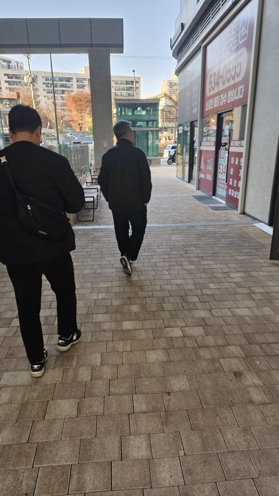
1
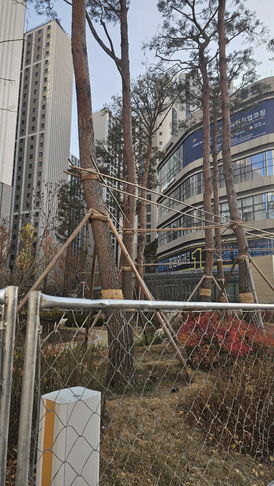
2
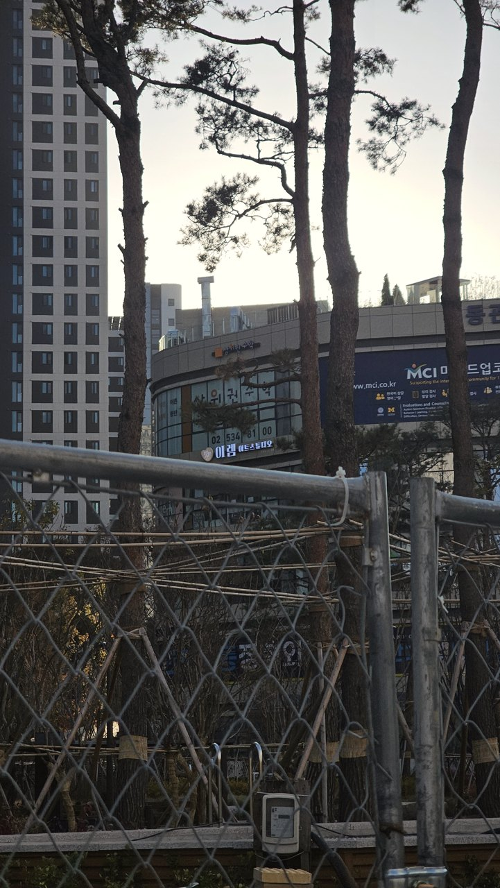
3
상가 앞 보도 → 펜스 너머 소나무 → 펜스와 고층 동15:53 · 작은 칸 하나의 힘2분 7초
길은 다시 단지 쪽으로 이어졌다. 민브로님이 엄청 넓어 보인다고 하자 대장님은 "걸어보면 되게 커요"라고 했다. 모르고 보기만 하면 그저 그렇게 보이지만, 알고 보면 샛길도 많고 놀이터와 센터도 많다. 밖에서 임장하는 사람들은 모르는 부분이었다.
상가에 술집이 없으니 술집을 내면 되겠다고 생각하는 사람도 있겠지만, 안 된다고 했다. 이곳 사람들은 마셔도 와인을 사다 집에서 마시고 "집에 초대를 많이 한다고 사람들이". 대신 아이 키우기에는 좋다. "애 키우기에는 여기가 좋은 게 유흥이 전혀 없거든" 이런 분위기는 앞길만 지나쳐서는 감이 잡히지 않는다. "이게 딱 알고 이 뒤로 걸어가면서 봐야 보이지"
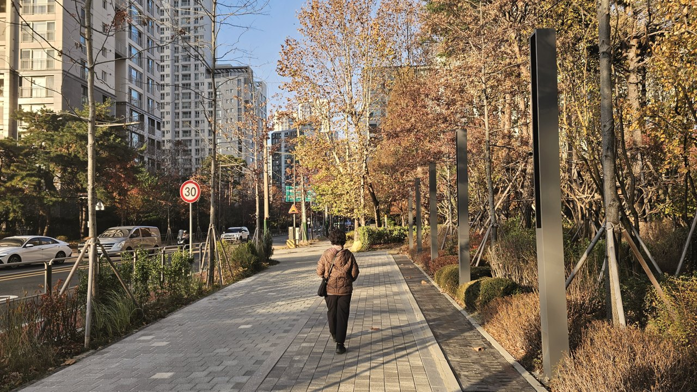
단풍 가로수길
공원 쪽으로 들어서자 대장님은 조금만 걸어가면 잠원 한강이라고 했다. 한강에서는 크루가 너무 많아 잘 뛰지 않지만, 압구정에 갈 때는 한강으로 2킬로미터쯤 달리면 금방이라고 했다. "공원이 큰 거 아니야 이런 게 좋은 거야" 강남인데 녹지가 이만큼 좋다는 것이 좋은 점이라고 했다. 낙엽 쌓인 오솔길을 지나며 대장님이 말했다. "그러면 이제 신사동으로 넘어온 거야"
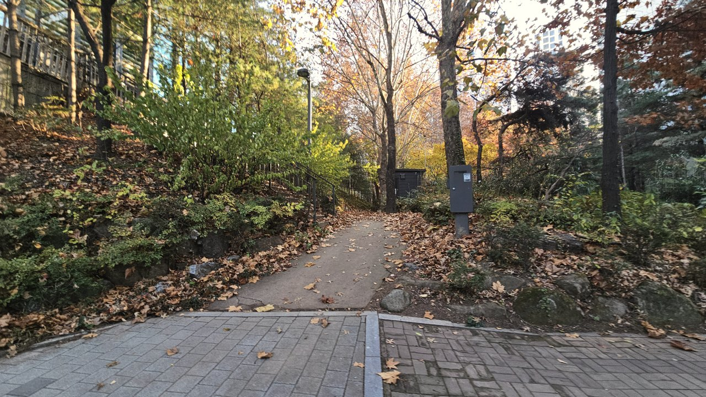
낙엽 쌓인 오솔길
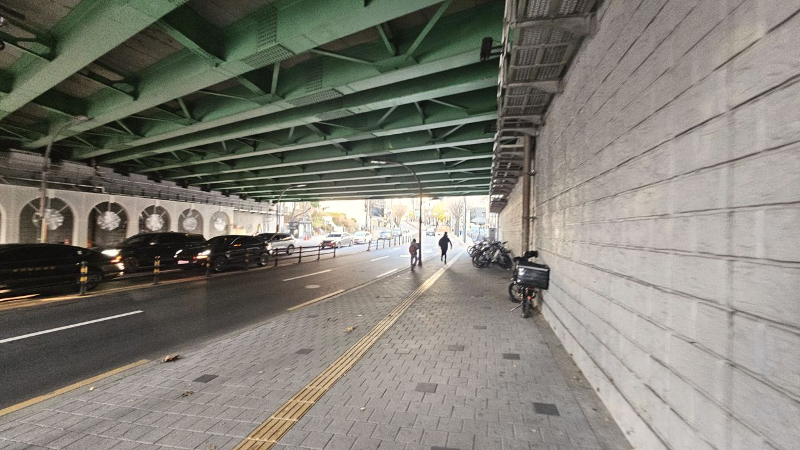
다리 밑을 지나 신사동으로
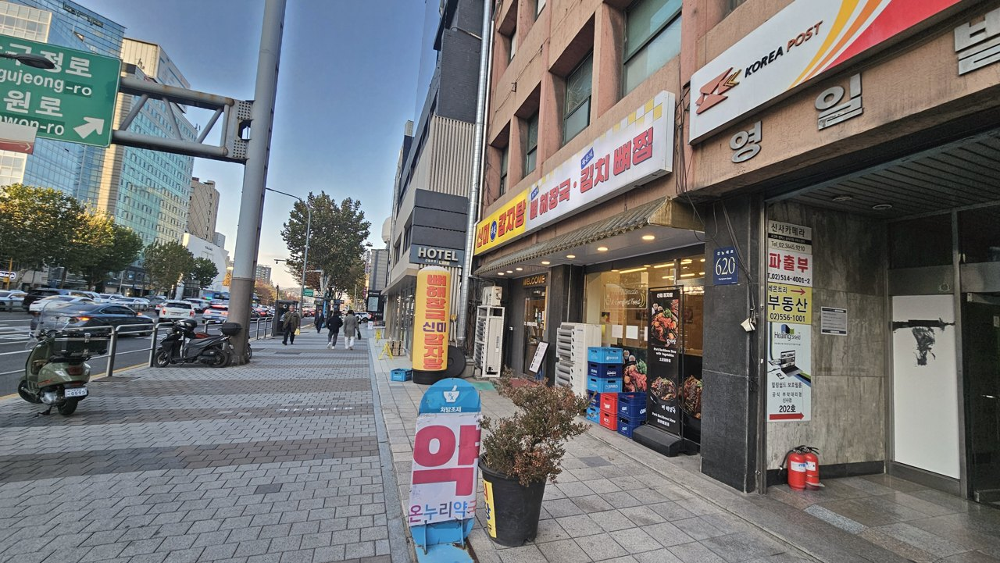
II.
감자탕집의 긴 오후
2026년 11월 26일 · 16:05 – 19:31
골목의 호텔에서 시작해 남는 사람의 이야기까지
신사동 골목, 감자탕집
i.골목 호텔이 버티는 이유
네 시를 조금 넘겨, 일행은 신사동 이면도로를 걷고 있었다. 주차된 차들과 가로수, 유리 건물이 늘어선 길이었다. 골목에 자리한 호텔 하나를 두고 대장님은 그 호텔이 아직 장사가 되는 데는 이유가 있을 거라고 했다. 신사역 쪽에는 성형외과가 많고 해외에서 온 사람들이 많다. 그쪽에서 놀다가 숙박비가 조금이라도 싼 곳을 찾아 내려오면 바로 이 골목이라는 것이었다. "이런데서 호텔 수요가 생긴거에요"
대장님은 그것을 일본 여행에 빗댔다. 남들이 다 가는 역 앞 말고, 역 뒤로 넘어가면 현지인 맛집이 있다는 말에 끌려가는 것과 비슷한 심리라고 했다. 민브로님이 "얘기해 주시니까 되게 재밌습니다"라고 했다.
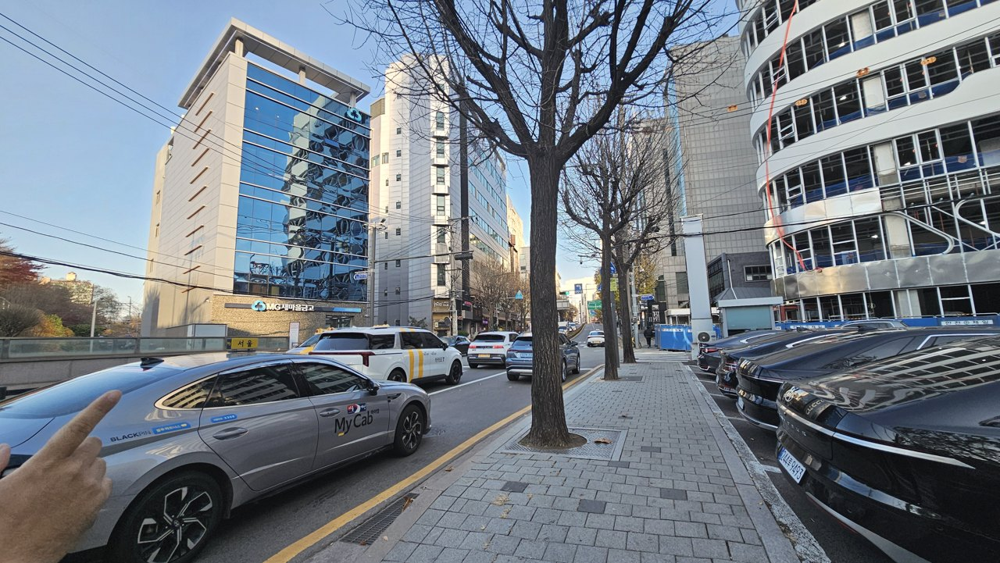
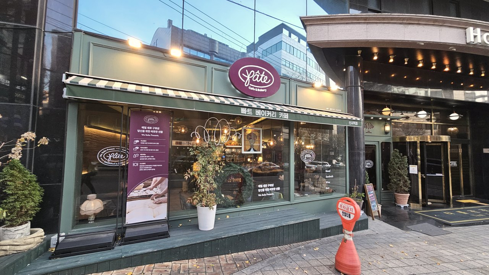
신사동 이면도로 · 초록 차양의 골목 가게
골목을 따라 걸으며 대장님은 상권을 보는 눈에 관해 말했다. 신사역에 놀러 온 사람들은 여기까지 올 생각을 못 하지만, 외국인들은 이미 이 골목을 봤다는 것이다. "상권을 볼때 그런걸 다 같이 봐야되는건데 당연히 단순히 인구 많다고 잘되고 그런게 아닌거지" 동네마다 미의식이 다르다는 이야기도 덧붙였다. 우리 눈에는 촌스러워 보여도 그 동네 사람들에게는 그게 최고로 예쁜 것이고, 그래서 그 동네에 맞는 가게가 따로 들어선다는 것이었다.
ii아는 사람만 오는 골목
조금 더 걸어가자 아구찜과 간장게장으로 오래 이름난 가게들 이야기가 나왔다. 그런 가게는 골목 안쪽에 있고 "아는 사람만 오는데", 대장님은 자신이 장사를 한다면 당연히 바깥쪽에 자리를 잡지 저 안쪽은 잡지 않겠다고 했다.
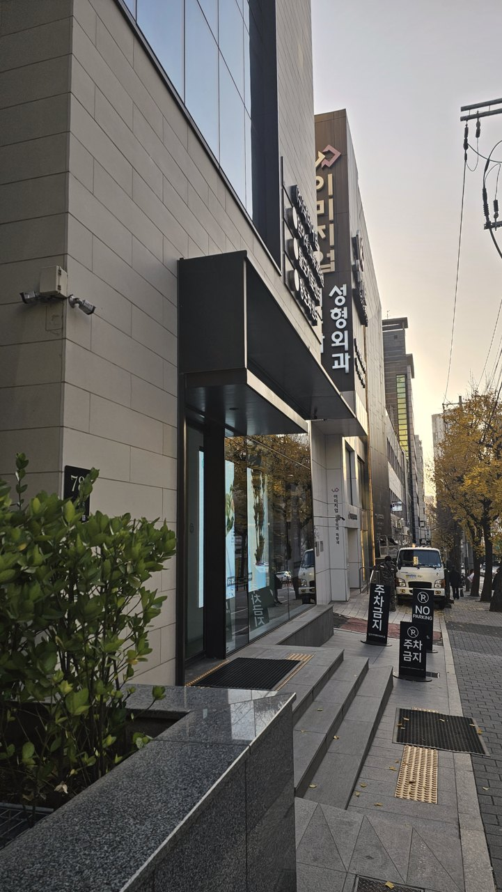
1
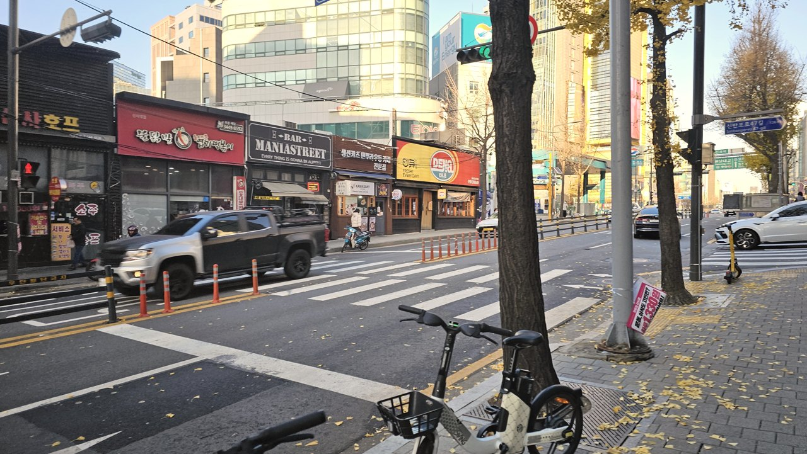
2
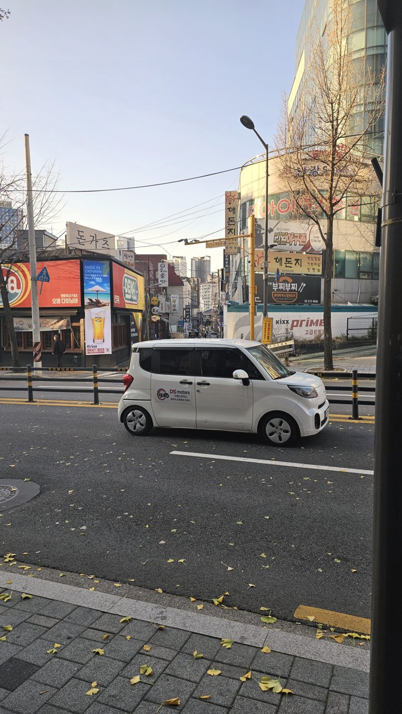
3
성형외과 간판이 붙은 건물 옆 → 큰길 교차로 → 길 건너 상가
갈 곳은 신미감자탕으로 정해졌다. 걸어온 지 20분쯤 됐을 무렵이었다. 대장님은 사람이 움직이는 범위는 마음이 먼저 정한다고 했다. "여기서만 있는 사람들은 저쪽으로 갈 생각을 아예 못해요 … 심리적으로는 못 가요" 강남에서 오래 산 토박이들이나 저 아래 골목까지 간다는 것이었다.
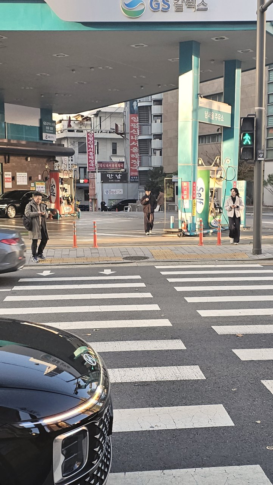
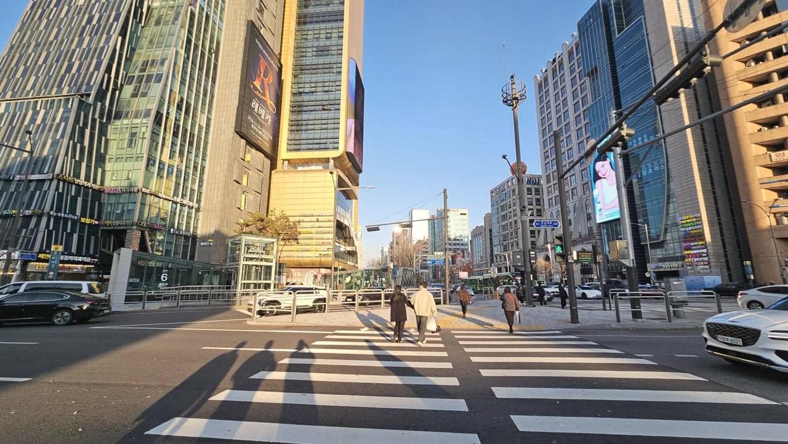
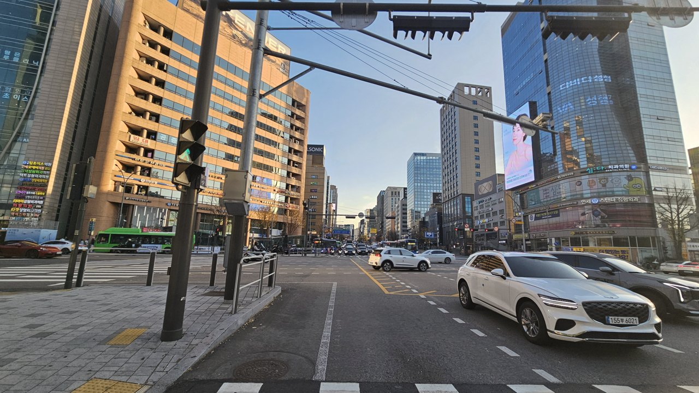
주유소 앞 횡단보도 · 큰길을 건너는 사람들 · 교차로와 빌딩들
이야기는 자영업으로 이어졌다. 대장님은 자영업을 하는 사람들 대부분이 아마추어이고, 아마추어가 장사하면 안 되는 이유는 장사가 힘들어서만이 아니라 자리를 못 잡기 때문이라고 했다. 자신이라면 외국인을 상대로, 페이스북에 현지인 맛집으로 알리는 쪽을 생각하겠다고 했다.
Try
"자영 업자는 자기 일도 힘들지만 나 같은 사람이랑 사업이 생겨나면 마케팅부터 모든 게 이길 수가 없는 거야" — "어떻게 이기겠어요"
생각하는 구조가 다르다는 것이 대장님의 결론이었다.
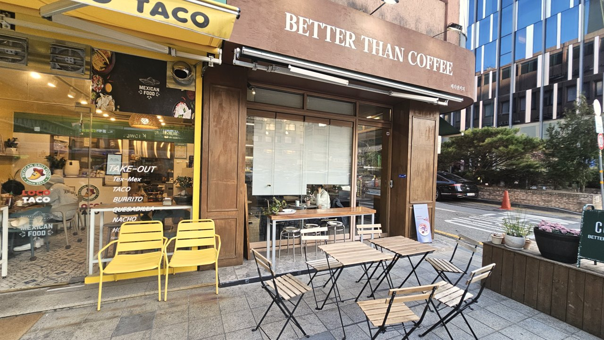
노란 의자의 타코 가게 앞
iii.아파도 뛰는 이유
간판에 '뼈해장국·묵은지 김치 뼈찜'이라고 적힌 가게 안은 손님 하나 없이 비어 있었다. 자리를 잡고 대장님은 해량님한테도 얘기해 달라고 했다. 주문은 대장님이 했다. "감자탕 2인분이고요 그리고 김치 뼈찜 요거 하나 주시고" 김치뼈찜도 2인분이 된다고 하자 그것도 2인분으로 바꿨고, 대장님이 한마디를 보탰다. "그리고 소주 하나 주시고"
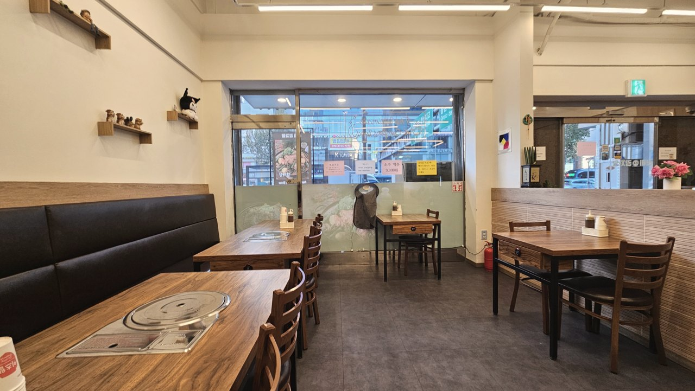
손님 없는 오후의 감자탕집
음식을 기다리는 동안 대장님의 발 이야기가 나왔다. 대장님은 아픈 발로 계속 달리고 있었다. 아프지만 천천히 뛰면 된다고 했고, 반년은 쉬어야 할지도 모르지만 지금은 쉴 수가 없다고 했다. "지금 쉬면은 2027년을 진짜 다 말아먹어." 처음 다시 뛸 때는 13분이 나올 만큼 느렸고 절뚝거리며 뛰었지만 걷지는 않았다. "걷진 않았어요. 걸으면 안 돼요." AI든 누구든 다 말렸지만 멤버들에게 보여 줘야 하는 것도 있다고 했다. 11월 중순부터 멤버들을 뛰게 하려던 계획이 있었고, 지금 그 흐름을 놓치면 안 된다는 것이었다.
16:23 · 지금 쉬면 2027년을 말아먹는다1분 42초
iv.한 명씩, 따로
멤버들을 뛰게 하는 방법도 이야기했다. 대장님은 한 사람씩 따로 연락한다고 했다. 처음부터 왜 안 뛰냐고 묻지 않는다. 한 시간쯤 달리기와 전혀 상관없는 대화를 나누며 좋은 이야기를 충분히 해 준 다음, 마무리할 때 혼자 동기부여를 하기가 너무 힘드니 도와 달라고 말한다.
Try
"그럼 도와주기도 안 도와준다고 말하기도 어렵잖아" — "혼자 하는게 힘들다는 말씀도 그것도 그치"
민브로님은 "정성 자체가 정성이야"라고 했다.
대장님은 전날 멤버들에게 공유한 해외 팟캐스트 영상 이야기도 꺼냈다. 한국 채널은 안 본 지 1년이 넘었고 미국, 일본, 스페인 채널을 본다고 했다. "왜냐면 질문의 질이 달라" 공유에는 기준이 있었다. 보고 나서 충분히 괜찮으면 그냥 주고, 그 정도가 안 되거나 멤버들이 오해하거나 핵심을 놓칠 것 같으면 직접 풀어서 강의한다. "100 중에 80이 괜찮아 그럼 무조건 줍니다 근데 50 60만 괜찮아 그럼 내가 강의를 해" 누구에게 먼저 보여 줄지도 정해 두었다. 이번 영상은 사업을 해 본 사람이어야 빨리 알아듣는 내용이라 해량님이 가장 먼저 봐야 한다고 판단했고, 예상대로 해량님이 가장 자세하게 남겼다고 했다.
16:29 · 80이면 주고, 60이면 강의한다2분 18초
줄 서는 맛집 이야기도 잠깐 지나갔다. 대장님은 "줄 서는 게 자체가 유행인 거야"라고 했다.
v비용 안 드는 사업
먹는 장사는 잘 상하고 재고 관리가 어렵고 유행이 너무 빠르다고 대장님은 말했다. 대장님이 생각하는 제일 좋은 사업은 중개업이었다. "매출을 늘리는 건 어려워 비용을 줄이는 게 더 쉬워 그러면 애초에 비용 안 드는 사업을 하는 게 더 좋아" 그런 사업 가운데 사람들이 잘 안 하려는 것이 많다며 직접 해 봤던 PC 수리를 예로 들었다. 그 업계에는 "진짜 정직한 사람이 별로 없어." 그러니 정직하기만 해도 한 번 맡긴 손님이 또 오고 소개해 주는 사업이라고 했다. 대기업이 들어오기엔 작고 영세업자가 하기엔 애매한 자리가 가장 좋다는 것도 대장님이 늘 하는 말이었다. 예전에 팔던 중장비 어태치먼트가 그런 시장이었다.
16:36 · 비용 안 드는 사업과 틈새1분 49초
그 사업을 할 때 예전 동업자와 생각이 갈린 지점이 있었다. 동업자는 돈을 크게 돌려 시장을 다 죽이고 1등을 하자고 했고, 대장님은 반대였다.
이야기 중간에 음식이 나왔다. 감자탕을 먹어 봤느냐는 물음에 나는 "제가 안먹어본게 너무 많아가지고"라고 했다. 대장님은 민브로님에게 뼈찜을 어떻게 알았느냐고 물었다. 보통 사람들은 잘 모른다는 것이었다. "뼈찜이라는 게 원래가 생각보다 카테고리가 괜찮아요"
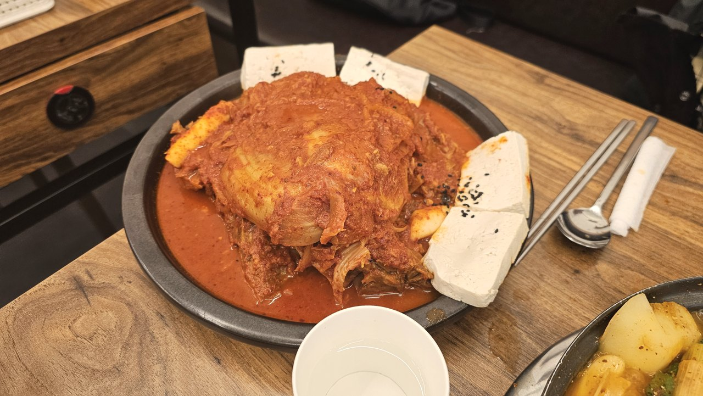
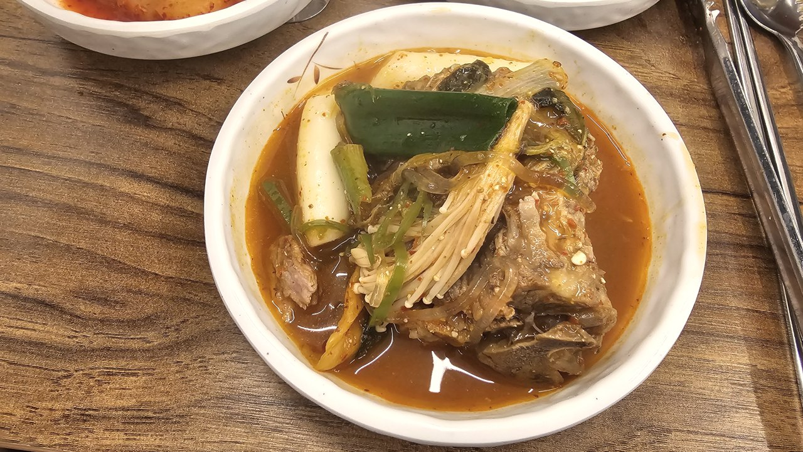
묵은지 김치뼈찜과 두부 · 감자탕 한 그릇
대장님은 다시 시장 이야기로 돌아왔다. "어떤 시장이 1인자가 된다는 얘기는 2, 3위가 있다는 거잖아." 2등, 3등에게는 그 나름의 생존 방식이 있다. 그들을 죽이려고 치킨게임을 벌이면 "우리가 돈을 제일 많이 쓰고 있잖아요 그런 모순이 생긴다니까". 의견이 갈리던 와중에 코로나가 터졌다.
vi.그릇이 다르다
실력 차이는 오래 봐야 보인다고 대장님은 말했다. "처음 보면 다 비슷해 보여" 같은 업에 오래 있다 보면 수준 차이가 생각보다 크다는 것을 알게 되는데, 그건 인간성이 아니라 한계를 말하는 것이라고 했다. 그릇이 작은 데서 큰 꿈을 꾸면 리더십이 안 되고 사람들이 떠난다. 그때 할 일은 자기 그릇 안에서 고치는 것이다. "그릇 안에서 그거 수정 하고 맞춰야 되는데 그거를 인정을 못 하면 다른 쪽으로 사업을 벌려" 그러다 망한다는 것이었다.
부부가 함께 사업하는 것도 안 된다고 했다. "사업은 혼자 해야죠" 아내가 가끔 회계를 돕는 정도는 괜찮지만, 사업을 같이 하면 갈등이 생긴다는 것이다. 진실과 거짓말에 관해서는 조던 피터슨의 말을 빌렸다. "진실을 다 말할 필요는 없다 하지만 거짓말 하지 마라가 핵심이잖아" 그래서 대장님은 거짓말할 수밖에 없는 상황을 애초에 만들지 않는다고 했다.
vii.9만 8천 원
다섯 시쯤, 멤버 한 사람이 입고 온 유니클로 옷이 화제에 올랐다. 대장님이 그 값을 짐작했다.
Try
"98,000원? 딱 98,800원 아 감이 진짜 살아있다 내가" — "10얼마는데 할인해서 98,900원"
대장님은 안감과 덧댄 부분을 짚었다. 그게 없으면 7만 원대인데 그게 붙으면 2만 원쯤 더 들어간다는 것이었다. 그러고는 수능 등급컷을 혼자 예측해 온 한 일타강사 이야기를 꺼냈다. 그 강사가 자신도 설명하지 못하는 감의 영역이 있다고 한 것처럼, 사업을 오래 하면 감이라는 게 생긴다고 했다. 내가 "어떻게 보면 데이터보다 더 정확할 수 있겠네요."라고 하자 대장님은 중요한 결정일수록 감으로 하라고 했다. "중요한 결정이 있으므로 감으로 하는게 좋아. 별거 아닌 결정을 좀 신중하게 하시고"
viii정답은 해봐야 나온다
그 감은 해 봐야 생긴다. 대장님은 그것을 방정식에 빗댔다. 값을 얻으려면 무언가를 넣어 봐야 하는데, "상상은 아무런 소용이 없어. 왜냐면 그거는 방정식에다 뭘 안 넣는다는 거랑 똑같은 거야". 게다가 세상은 수학처럼 떨어지지 않는다. 사업의 세계에서는 억지 논리로도 사람을 설득하는데, 그것도 이것저것 많이 넣어 본 사람이 안다는 것이었다.
17:06 · 정답은 해봐야 나온다1분 38초
곧 식탁에서 작은 예가 생겼다. 대장님이 감자탕과 뼈찜 중에 뭐가 더 맛있느냐고 물었고, 대답을 듣고는 "이런 거야 답이 없다고"라고 했다.
대장님은 민브로님에게 했던 코칭 이야기로 넘어갔다. "많이 해보면 감이 잡혀요" 모임에서 너무 멀어지면 피드백도 어려워지니 최소한 BMW에는 참여하는 게 좋다고 했다. 해 보면서 "이게 될까" 싶은 일을 "10번 중에 한 번씩 경험하면 돼요". 다른 멤버 한 사람은 영업에서 "다섯 개 중에 하나씩만이라도 해봐라"라는 말을 따랐고, 넉 달째부터 1등을 하더니 전국 2등까지 올랐다고 했다.
"시도를 하는 거랑 하는 척 하는 건 달라 해 본 사람들은 분명히 피드백이 와요" 대장님은 민브로님에게 달리기를 계속하면서 BMW에도 조금씩이라도 참여해 보라고 했다.
ix.유지하는 것 자체로
여섯 시가 가까워지자 이야기는 결혼으로 흘렀다. 대장님은 "내 생각에 결혼은 유지하는 거 자체로 완벽한 거야"라고 했다. "유지가 어려운 거라 생각해"라는 말도 덧붙였다.
그 말이 끝난 직후, 대장님의 "왔어?"라는 짧은 말이 끼어들었다. 해량님이 자리에 합류한 것이 이 무렵이다.
얼마 뒤 뼈와 우거지를 추가로 시켰고, 쫄면은 넣지 않기로 했다. 대장님은 전골에 쫄면이나 떡, 당면이 들어가면 금방 먹고 끝나 버린다며 이렇게 말했다. "이거를 맑게 먹으면 3시간도 먹을 수 있거든요"
x.관리가 신뢰다
외모 이야기가 이어졌다. 대장님은 아무도 하지 않는 말이라며, 삶은 생각보다 외모에 좌우된다고 했다. "그러니까 생각보다 삶이 외모지상주의" 자신이 운동하자고 말하는데 몸이 엉망이라면 그 말이 먹히겠느냐는 것이었다. 내가 지난주 요양원 영업을 다니며 느낀 것을 이야기했다. 거절이 이어지면서 외적인 것도 중요하다는 생각이 들었다는 것이다.
Try
"아 이게 외적으로 그게 중요하구나 그런 거를 나가보니까 느끼더라고요" — "엄청나게 중요해요 엄청나고 중요하고 그거를 아무도 말 안 하지"
외모를 타고난 것으로만 보지 않는다는 데 대장님 말의 무게가 있었다. "관리를 하라는 거지" 관리해서 만든 몸은 "정말 하루 만에 망가지진 않아". 쌓기는 어렵지만 한번 쌓으면 빼고 싶어도 못 뺀다. "근데 그게 신뢰의 상징이 돼요" 사람들은 말로 표현하지 않아도 감각으로 안다는 것이다. "말로 할 수 없는 것들이 더 많은 거야 세계에는"
18:09 · 하루 만에 무너지지 않는 것1분 15초
리더의 몸 이야기도 했다. 운동을 빡세게 하면 기분이 좋아지고, 기분이 좋으면 여유가 생기고, 여유가 생기면 짜증을 내지 않게 된다. 그게 안 되면 리더가 조직원들 앞에서 짜증과 하소연을 하게 되는데, 직원들도 기댈 곳은 리더뿐이라 리더가 그러면 기댈 곳이 없어진다고 했다.
xi바를 높여 놓는다
대장님은 모임에서 매일 5km를 뛰는 기준을 일부러 높게 잡아 두었다고 했다. "왜냐면 그렇게 해야 사람들이 그 바가 올라가 버리니까" 대장님 자신은 이번 주에만 7km, 10km, 5km를 뛰었다.
그리고 운동과 몸 관리는 다르다고 했다. "몸 관리라는 거는 잘 자는 거 잘 먹는 거 이게 몸 관리야" 매일 달려도 세 시간밖에 못 자면 몸 관리가 안 되는 것이고, 잘 자도 운동을 안 하면 그것도 이상한 것이다. 운동선수에게는 여기에 기술이 더해지고, 사업가에게 기술은 사업 실력과 영업이다. 사업가는 오히려 운동선수보다 더 관리해야 한다. "왜냐면 사업가는 시즌, 비시즌이 없거든"
내가 러닝만 하는 멤버 이야기를 꺼냈다. 러닝은 잘하는데 그 위의 체력이 올라오지 않는다는 것이었다. 대장님은 케틀벨 스윙을 시켜 보면 바로 체력이 나온다고 했다.
Try
"자기가 하고 싶은 거하고 잘하는 것만 하는 거는 반대로 전혀 도움이 안 돼요" — "어려운 걸 해야죠"
xii.칭얼대지 않는다
나는 내 허리 이야기를 했다. 허리 때문에 움직이면 아플 거라는 생각이 들면 실제로 아팠다. 대장님이 그런 증상에 이름이 있다고 하자 나는 움직임 공포증이라고 받았다. 나는 허리를 알려 주던 분에게 5년을 배웠지만 뛰지는 못했다며 대장님과 비교했다. "그분은 컨설팅을 해주신거에요. 대장님은 코칭을 해주시는 거에요." 방법만 알려 주는 것으로는 자신을 뛰게 하지 못했다는 것이다. "저는 진짜 허리가 아파서 누워만 있던 사람이고", 그런 사람이 지금은 10km를 뛴다. 허리 신경통이 있으면 발이 아파 100m도 걷기 어렵다는 걸 나는 알고 있었다. 그러고는 발이 아픈데도 한 시간 넘게 뛴 대장님에게 어떻게 그럴 수 있느냐고 물었다.
대장님의 대답은 짧았다. 아프면 한마디 하고 끝이지, "내가 그거 막 칭얼칭얼 안 되잖아". 아픈데 뛰라고 멤버들에게 권할 수는 없다고 했다. "근데 리더면 뛰어야 된다고 봐"
대장님도 허리 때문에 걷지 못했던 적이 있었다. 누워도, 앉아도, 걸어도 아프니 "계속 지옥이야". 그래서 예전에 내가 허리 전문가들에 대해 날 선 말을 할 때도 대장님은 그걸 나쁘게 보지 않았다고 했다. "적의 가 생긴 정도면 자기가 정말 아팠다는 얘기야" 그때부터 대장님은 나를 뛰게 만드는 것보다, 내가 스스로 뛸 수 있다고 느끼게 하는 것이 먼저라고 생각했다.
xiii.목적을 드러내지 않는 코칭
대장님은 코칭할 때 목적을 드러내지 않는다고 했다. 목적이 드러나는 순간 그 사람은 목적에 사로잡혀 오히려 못 하게 된다는 것이다. 모임에 슬로우 조깅을 퍼뜨릴 때 가장 크게 고려한 사람이 나였고, 대장님은 자신도 초보로서 같이 시작하는 모습을 보였다. "해볼수 있다는 생각이 들게 만드는 사람이 되는게 더 중요해요" 메시지는 그다음이었다. "내가 괜찮은 사람이면 말을 못해도 나한테 살거고 이상한 사람이면 말을 잘해도 나한테 안 사요"
말에 무게가 실릴 때까지 신뢰를 쌓으려면 시간이 걸리고, 그러려면 에고를 버려야 한다. "왜냐면 내 자신이 나의 에고를 많이 버려야 돼요" 에고를 버리고도 혼낼 수는 있다. "그래서 화를 낸 거랑 혼나는 거랑 다르다고 얘기하는 거지"
슬로우 조깅은 처음부터 못 달린다는 개념이 없게 만든 틀이었다. "실패가 없는 게임이예요 그냥 나가서 달리기만 하면 이겨" 대장님은 속도 이야기를 하지 않았고 오히려 더 느려도 된다고 했는데, 그러다 보니 속도가 빨라졌다. 나는 이날 10km를 휴대폰으로 일을 보면서 뛰었다고 했다.
18:36 · 목적을 드러내지 않는 코칭2분 51초
xiv20과 80
"100일만 꾸준이 해도 뭔가 알아요" 그런데도 대장님이 모임을 다그치지 않는 데는 이유가 있었다. "어떤 조직이든 20%가 끌고 가고 80%는 잘 몰라" 80%에게 뭐라 하기보다 잘하는 사람이 몇 명 더 생겨 분위기가 건강해지기를 바란다는 것이다. 그 바탕에는 대장님의 믿음이 있었다. "리더가 클리버하고 스마트하고 인텔리전트하고 명석하면 조직이 썩지 않아요" 그래도 안 된다면 리더가 자신에게 물어야 한다. "결국은 뭐가 안되면 결론적으로는 리더 잘못이라니까"
사업이 커지면 사장을 떠받드는 사람이 많아지고, 사장이 막 해도 뭐라 할 사람이 없어진다. 그 악순환 속에서 사장은 "명료한 정신을 유지를 못해요". 리더의 가정 문제도 조직은 반드시 느낀다고 했다.
xv.떠난 사람을 해석하는 법
대장님은 모임을 떠난 사람들 이야기도 꺼냈다. 그들의 행동이 나쁘다고 보면서도, 대장님은 자신이 그럴 여지를 하나도 주지 않았는지를 스스로 물었다고 했다. 떠난 사람을 용서하고 말고는 중요하지 않았다. 중요한 것은 남아 있는 사람들이었다. "그러니까 어떤 사건들은 다 번역이 필요해." 대장님은 떠난 사람들을 위해서가 아니라 남은 사람들을 위하는 마음으로 그들을 이해하려 했다. 떠난 사람만 생각하는 것은 남은 사람들을 무시하는 일이 된다는 것이었다. 리더는 원래 억울한 자리라고도 했다.
인생이 바뀐 사람도 그걸 오래 기억하지는 않는다. "그걸로 인생이 변한다 한들 사람들은 생각보다 오래 기억 안 해" 그러니 서운해할 필요가 없다. 대장님은 숫자로 말했다. "그러니까 95명은 여러분이랑 안맞아요" 잘해 줘도 튕겨 나가고, 남는 사람은 다섯 명이다. "그 사람들이랑 뭘 하는 게 신뢰야 그게 신뢰망인 거야"
대장님은 해량님에게도 초반에 직원들에게 기대하지 말라는 이야기를 해 줬다고 했다. 그때는 고집이 있었지만 지금은 많이 듣는 사람이 됐다는 것이었다.
19:08 · 95명은 튕겨 나간다1분 25초
일곱 시를 조금 넘겨 대장님이 말했다. "나가서 딴 데가 먹자 많이 먹었으니까" 바로 옆에 옛날 통닭집이 있다는 말이 나왔다. 맑게 먹으면 세 시간도 먹을 수 있다던 그 전골 앞에서, 일행은 세 시간을 넘겨 앉아 있었다. 테이블에는 빈 소주병 여러 개와 반찬 그릇이 남았다. 일곱 시 반, 대장님이 물었다. "가자 다 먹었어?"
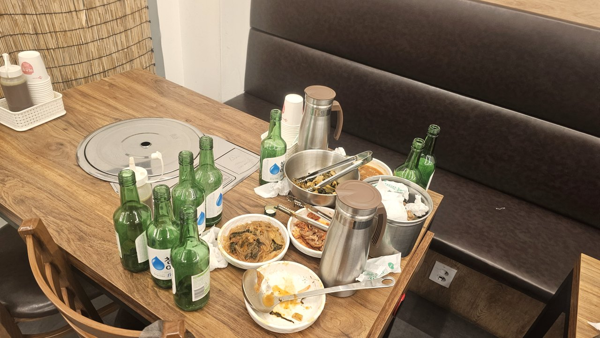
자리를 뜨기 전의 테이블
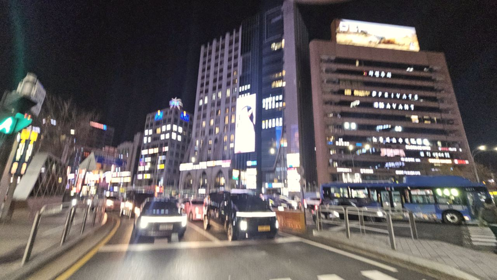
밤이 된 신사동
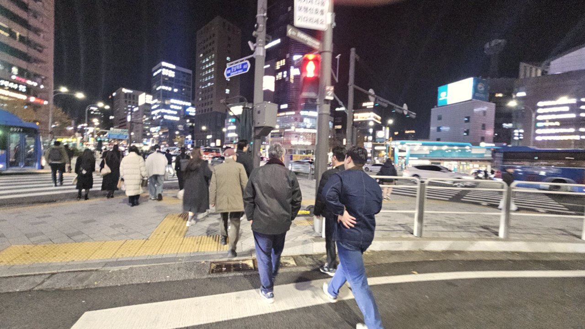
III.
옛날 통닭집
2026년 11월 26일 · 19:33 – 21:05
싸게 시작해야 고민할 시간을 번다 제일 적극적인 공격은 기다림이다
신사동 골목, 옛날 통닭집
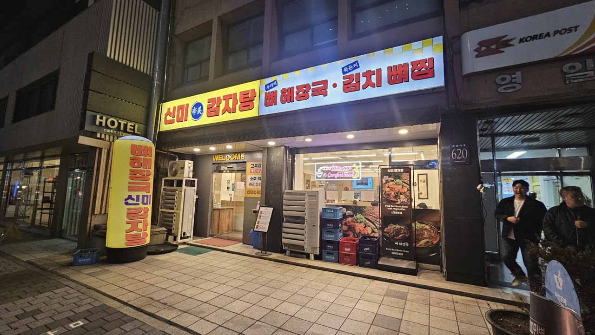
감자탕집을 나서며
i.끝까지 밀어붙이기
감자탕집을 나선 네 사람은 신사동 골목으로 걸어 들어갔다. 저쪽에도 치킨집이 하나 있다며 내가 길을 잡았다.
걷는 동안 대장님은 이 동네 사람들의 차림 이야기를 했다. 너무 꾸민 사람은 오히려 이 동네 사람이 아니라고 했다. "여기 출신 애들은 너무 안 꾸미고 와". 브랜드로 치면 샤넬은 피하고 오히려 구찌 쪽이라고, 요즘 흐름이 샤넬은 아니라고 했다. "여기 사는 얘들은 튀고 싶어 하지 않는데 내세우고 싶은 건 있어서", 튀지 않는 선 안에서 자기를 드러낸다는 것이었다.
동네 이름 '신사'를 두고 내가 농담을 하나 꺼내려다 그만두자, 대장님이 바로 짚었다. 안 될 것 같아도 밀어붙여야 한다고.
Patience
"감 보고 분위기 안 좋으니까 안 하려고요" — "안되지. 할거면 그냥 끝까지 가야지."
뻔한 선택이어도 괜찮다고 했다. "그 뻔한 선택에도 이유가 있다고 자기가 설득할 수 있으면" 그걸로 가면 된다는 것이다. 누군가 "이유를 만들어서라도 가야지" 하고 받았고, 나도 "이대로 밀어붙여야 돼"라고 했다.
19:37 · 할 거면 끝까지 가야지1분 23초
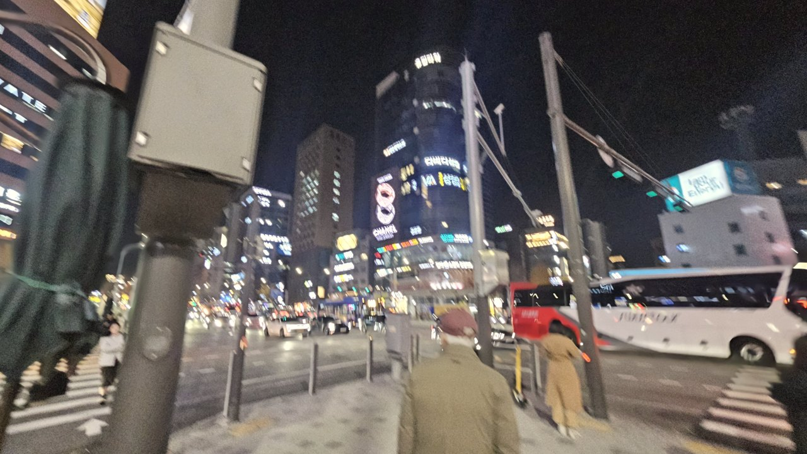
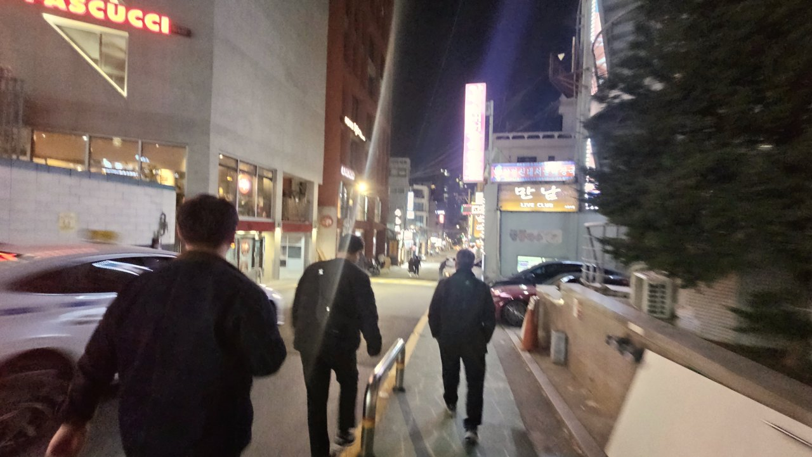
신사동 교차로 · 골목을 걷는 세 사람
ii오뎅탕집 앞의 통닭집
통닭집에 자리를 잡자 대장님이 물었다. "치킨 시켰는데 소주 맥주 먹을 사람 있어요?" 소주 한 병과 카스 한 병, 물과 컵 네 개가 나왔다. 대장님은 병맥주라면 그냥 카스를 마신다고, 테라나 클라우드는 약간 고급이라고 했다.
치킨 말고 하나를 더 고를 차례였다. 내가 간사이 오뎅을 먹고 싶다고 하자 대장님은 오뎅을 정말 좋아한다고 했다. 그러고는 메뉴 고르는 센스를 짚었다.
Patience
"여기 앞에 오뎅탕집이 있단 말이야 우리 갔었잖아" — "최악의 선택"
이야기는 가게 자체로 넘어갔다. 대장님은 예전에 가 본 낡은 술집 이야기를 하며 "요즘에 이런 데가 많이 없어져서 그냥 이런 데 가면 그게 더 좋아요"라고 했다. 레트로를 흉내 낸 가게는 나도 "요즘에 좀 별로인 것 같아요"라고 했다. 가게는 골목에 맞아야 한다. 근처의 쪽갈비집은 "이 골목에 맞지 않아요". 자기라면 이런 가게에 오히려 아주머니를 쓰겠다고도 했다.
두부김치 이야기가 나왔다가 아까 두부를 많이 먹지 않았느냐는 말에 넘어갔고, 코다리조림이 나오자 대장님은 "이건 코다릿집이 아닌데 코다리도 어디서 갖고 올 거야"라고 했다. 멤버 한 사람이 계란말이를 고르자 대장님은 사장님께 계란말이를 부탁하며 "센스가 있네요"라고 했다.
19:44 · 오뎅탕집 앞에서 오뎅을 시키면2분 18초
iii.제동장치
대장님은 서산을 오가는 민브로님을 두고 "내일 가면 또 현실이 서산인 사람이니까"라고 했다. 평소 두 시간이면 오는 길이 이날은 차가 막혀 세 시간 가까이 걸렸다.
대장님은 자기가 결혼을 안 했다면 오늘 이렇게 마시고 그대로 서산까지 갔을 거라고 했다. 결혼 전에는 "어떤 제동장치라는게 없는거야". 그는 "원래 옛날부터 그렇게 즉흥적으로 살았던 사람이야", 술 마신 김에 그 길로 비행기를 끊는 것도 좋아하는 사람이라고 했다. 지금은 아내와 딸이 있는 가정이 그를 멈춰 세운다. "이거 자체가 나쁘다는 게 아니야 이게 나를 어떻게 보면 좀 건전한 방식으로 막아주는 게 있다는 게". 그래서 "뭘 안 하고 집에 가서 딸을 보고 내일 아침에 일어날 수 있는 거야".
나이에 맞는 삶이 있다고 했다. 20대에는 흉내도 내 보고, 다음 날 해장술 한 잔에 김밥이면 됐다. 지금 나이에 그러면 할 때는 재미있어도 다음 날 기분이 좋지 않다. "내 나이대에는 맞지 않아요 그니까 나이대때 맞는 게 있어". "그래서 누적이 되면 … 삶이 안 좋아집니다." 자유로워 보이는 삶이 "그게 정말 미적으로 아름다운 삶인가" 생각해 보면 그렇지 않았고, 그 빈곤은 돈과는 상관이 없다고 했다.
대장님은 서산에서 온 민브로님에게 이 동네에 들어설 때를 떠올려 보라고 했다. 서산에서는 보기 어려운 사람들이 여기에는 있다고. "와봐서 느끼겠지만 여기 있으면 달라요" 하자 "완전 달라"라는 대답이 돌아왔다. 그런 사람들을 가까이서 보면 "여기 있으면 남자가 동기가 생겨". 비교할 대상이 없는 곳에서는 내가 제일인 줄 알게 되고 꿈을 크게 꾸기 어렵다고 했다.
그사이 통닭이 나왔다. 염지가 잘됐다, 튀김옷이 잘됐다는 말이 오갔고, 대장님은 "여기는 원래 유명해요 맛있어요 여기 좀 옛날 통닭 느낌"이라고 했다. 이 근처에서 워낙 오래된 집이라고 했다.
iv.싸게 시작해야 버틴다
한 입 먹은 내가 "저희 집이랑 거의 거의 똑같아요"라고 했다. 우리 아버지는 20년 동안 치킨집을 하셨다. 대장님은 치킨집으로 20년을 버티며 자식을 키운 건 "정말 대단하신 거야"라고 했다. 아버지는 배달기사를 쓰지 않고 직접 오토바이로 배달하셨고, 사고도 세 번 있었다.
대장님도 치킨 체인점을 해 본 적이 있었다. "생각보다 체인점이 해주는게 많지 않아". 그래서 같은 체인이어도 맛이 다르다. 나는 어머니께 들은 이야기를 꺼냈다. 튀기기 전 물 비율이 있고, 꺼낸 뒤 몇 분을 두었다가 담아야 손님이 받았을 때 눅눅하지 않다는 것이었다.
대장님은 그게 사업으로 보면 본질이라고 했다. 본질이냐 마케팅이냐 하지만, 본질을 채우면 그게 마케팅이 되기도 한다. "근데 그 본질에 채워질때까지 오래 걸려요." 요즘 자영업은 배달앱에 매달리다 보니 음식에 신경을 못 쓰고, "그걸 생각하다 보면 맛이 없어져".
그래서 결론은 하나였다. "싸게 시작해 무조건". "비용이 싸야 돼", 그래야 고민할 시간을 번다. 나도 우리 집 이야기를 보탰다. 2층에 살고 1층이 가게라 월세가 없다. 전에 다른 건물에서 월세를 내며 할 때는 안 됐고, 옮기고 나서 잘됐다. "왜냐면 여유가 없으니까".
대장님은 "어떤 이런 사업을 해도 1년정도는 버틸 수 있는 사업이 훨씬 좋아"라고 했다. 고민한다는 건 시도하고 실패해 보는 일이다. "시도랑 실패를 해봐야 되는데 그게 적어도 6달 걸려요". 거기서 괜찮은 공식을 찾아 적용하기까지가 1년이다. 좋은 입지부터 찾으면 그 시간이 너무 짧아진다. 실력이 늘면 감당할 수 있는 비용도 커지고, 그릇이 커진다. "패턴은 비슷한데 확장이되는 거지". 결국 "그 비용을 감당할 수 있는 만큼 하는 거야".
20:04 · 싸게 시작해야 고민할 시간을 번다2분 26초
v잃어도 되는 돈
내가 비용을 내는 사람과 관리하는 사람이 다르면 그 부담은 누가 지느냐고 물었다. 대장님은 비용을 지불하는 사람이 가장 많이 감당할 수밖에 없고, 돈을 내지 않은 쪽이 그 무게를 이해하기는 어렵다고 했다.
그는 투자할 때 "나는 잃었다고 생각하고 투자하긴 하거든"이라고 했다. 돌아오지 않으면 "그냥 끝난 돈이야 난 또 벌면 돼 라고 생각해", "나는 계속 제로포인트에서 시작하는 거지". 투자에는 사업에 대한 것도 있지만, 함께한 사람이 사업가로 배우기를 바라는 마음도 들어 있다. 그래서 안타까운 건 돈이 아니라 사람이었다. "그 사람들이 자라줘야 우리가 이 어떤 네트워크에서 더 클 수가 있거든요". 돈을 회수해도 사람이 배우지 못했다면 "그럼 난 잃었다 생각할 거 아니야". 회수부터 따지는 사람에게는 이렇게 말했다. "반대로 얘기하면 그렇게 생각하는 사람은 투자하지 마세요".
예전 동업자와는 생각이 달랐다. 크게 키워 한 번에 빠져나가는 그림보다 "어차피 살면은 계속 사업할 거잖아 난 사업을 더 많이 하고 싶었어". 전날 본 영상은 "당신의 사업이 뭡니까?"라는 질문으로 시작했고, 사업이 은인 같다는 그 대답에 대장님은 너무 감동했다고 했다. 어릴 때 삶을 바꾸고 싶어 계산해 보니 직장은 "계산해봤을 때 끝이 다 보여". "사업이라는 건 어쨌든 상방이 열려있어". 어차피 밑바닥에서 시작한 사람이었다. "사업이란 건 나한테 꿈꿀 수 있게 해준 어떤 그런 거였단 말이야". 지금도 그렇다. "사업할 수 있는 게 나의 능력인 거야". 그런 관점에서 한 투자였다.
20:14 · 사업은 상방이 열려 있었다1분 9초
vi.제일 적극적인 공격
이야기는 모임에 잘 따라오지 못하는 사람을 어떻게 대할지로 이어졌다. "나는 무조건 항상 기다려 보거든요 근데 이제 안되면 내가 말을 하는거지". 바쁘다는 사람이 답답할 수는 있다. 그래도 먼저 물어야 한다. "내가 그거를 비판해서 도움이 될까? 그걸 생각을 해야 돼". 도움이 안 되면 할 이유가 없다. "하지만 그 답답함은 내꺼야". 내 답답함을 남에게 넘길 일이 아니라는 것이다.
Patience
"뭐라고 말해줘야 돼요?" — "그거를 해서 느끼게 만드는 거가 중요한 거지 말로는 소용이 없어"
말 대신 "그냥 건조하게 예를 들면 내일부터 참가하세요", "한 달에 해보면 알 겁니다" 정도면 된다고 했다. 그래도 안 되면 어쩔 수 없다. "할 수 있는 거는 최선을 다하고 내가 할 수 없는 거에 대해서 나는 뭐 어쩔 수 없다 생각해".
멤버 한 사람이 고민을 꺼냈다. 같이 으쌰으쌰 하다 보면 따라오지 못하는 사람이 생기는데, 그 간극을 어떻게 해야 할지. 대장님은 그게 간극이 아닐 수 있다고 했다. "누군가가 꺼내주지 않으면 못할 수밖에 없는 침체의 시간이 누군가는 다 있어". 그 자신도 무너졌던 적이 많았다. 그 사람이 "원래 그런 사람이 아니라 그런 시절을 겪고 있다고 생각해보면" 간극은 없다.
그럴 때 할 일은 하나였다. "제일 적극적인 공격은 기다림이야". 몸으로는 끼어들지 않고 마음으로만 혼자 끼어든 채 기다리는 것이다. "신체적으로는 비개입을 하면서 정신적으로는 혼자서 개입을 하고 있어요".
Patience
"좀 많이 외롭고 힘들고 한데" — "기다릴 수 있어야된다는 거죠"
그렇게 기다려서 다시 움직이기 시작한 멤버들이 있다고 했다. "그 시절이 길어 생각보다", 한 달쯤 기다려 보는 일이 아니라고. 나는 지난 일요일 모임에서 한 멤버를 다그쳤을 때 대장님이 다시 마이크를 켜고 조율해 주었고, 그 뒤로 그 멤버가 러닝을 잘하더라고 전했다. 다만 스스로 끈을 끊는 사람까지는 붙잡을 수 없다고 대장님은 덧붙였다.
20:24 · 제일 적극적인 공격은 기다림1분 55초
vii.앨범을 내는 사람
대장님은 2020년 무렵의 자신을 돌아봤다. 그때는 더 많이, 더 세게 했다. 그렇게까지 할 일은 아니었나 싶다가도 "생각해보면 내가 지금 같은 생각이잖아? 그러면 모임이 그렇게 커지지 않았을 거야". 옛날 글을 보면 왜 그렇게 세게 썼는지 "내가 나를 이해 못하는 거지". 그때는 일하고 사업하면서 주말마다 수원과 서울을 오가고 새벽 4시에 일어났다. "옛날에 정말 미친놈처럼 산 거야".
그는 더콰이엇의 '럭셔리 플로우'라는 말이 좋다고 했다. 이제는 절박하게 랩하지 못하고, 지금 뱉는 것이 럭셔리한 것, 그게 지금 하고 싶은 말이라는 것이다. 자기도 같다고 했다. 딸이 있고 삶이 옛날 같지 않은데 글을 옛날처럼 쓸 수는 없다. "나한테 요구하지 말고 내꺼 즐겨", "내가 지금 쓰는 블로그의 흐름을 즐겨".
이야기는 힙합으로 길게 이어졌다. 대장님의 기준은 분명했다. "어떤 그 힙합이든 어떤 뮤지션을 평가할 때는 무조건 난 앨범이야". 앨범을 내는 건 생각보다 어렵고, 자기도 만들어 봤다고 했다. 사업도 같다. "사업가는 앨범을 내야지 싱글 내는 수가 없어 그러니까 싱글내면 망해요". 가끔 싱글을 잘 뱉으니 앨범만 내면 좋을 거라는 말은 "앞뒤가 다 바뀐 거야". 2년을 넘기지 않고 꾸준히 앨범을 낸 뮤지션이라면 "그러면 그거는 정말 존경할 만한 거야".
민브로님이 다시 함께하게 되면 LP를 직접 뜯어 앨범 하나를 해체해 설명해 주고 싶다고, 그래서 카메라도 알아보고 있다고 했다. 앨범을 해석한다는 사람들 이야기에는 "알긴 아는데 아는 척만 하는 거야. 그거랑 아는 건 다른 거거든?"
씨잼과 비와이 이야기도 나왔다. 상처 한가운데서 드러낸 것과 이겨낸 뒤에 꺼낸 것은 다르다. 그 당시에 드러낸 건 "그거는 그 자체로 예술성이 있는 거야". 이겨낸 다음에는 재편집이 들어간다. 거기에 완성도까지 붙으면 좋은 앨범이 된다. "근데 내가 고통이 있는데 이 고통을 뱉어내는 방식이 너무 세련되고 너무 좋아", 그게 씨잼의 앨범이라고 했다. 배신을 많이 당했다는 건 그만큼 많은 사람에게 믿음을 줬다는 뜻이라는 말도 오갔다.
마지막은 1999년이었다. 대장님은 주석의 '정상을 향한 독주'를 노래방에서 천 번은 부를 수 있다고 했다. 라임을 맞추느라 내용을 해치던 시절에 그 곡은 3점슛 비유를 끌고 왔다.
Patience
"거기 자체가 아예 프레임을 바꿔버리는 게" — "그 비유 자체가 상당히 진실해"
대장님은 그 비유를 끌고 온 순간, 한국에 힙합이 제대로 들어온 것 같다고 했다.
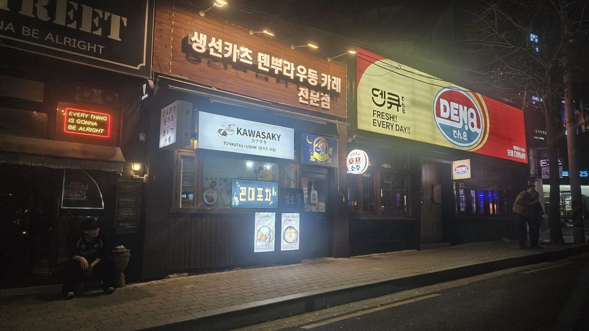
자정 넘은 골목
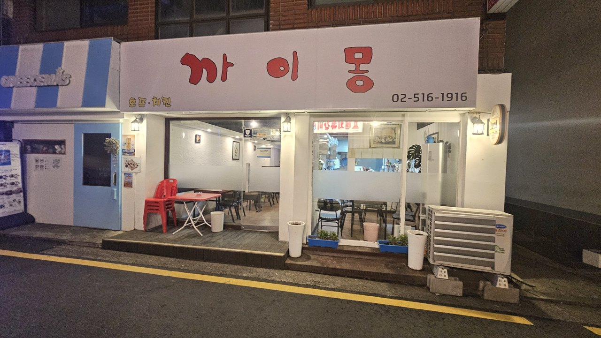
IV.
먹태 한 접시
2026년 11월 26일 · 21:08 – 00:34
안주 하나를 직관대로 골랐을 뿐인데 그 접시가 그날 밤 가장 긴 이야기가 되었다
신사동 술집, 그리고 귀갓길
i.한 줄의 가치
신사동 술집 테이블에는 대장님, 나, 민브로님, 해량님 네 사람이 앉아 있었다. 이야기는 힙합에서 시작되었다. 대장님은 랩도 한 줄 한 줄이 다 소중한 것이라, 그렇게 보기 시작하면 힙합을 이해하는 지평이 달라진다고 했다. "그런 걸 한 개 알게 되면 내가 몇 억 버는 것보다 낫다고 생각하는 거야".
천 번도 넘게 부른 노래를 지금도 달리면서 듣는다고 했다. 가끔 어떤 라인에서 이걸 그 당시에 어떻게 썼을까 싶어 걸음이 멈춘다고. "내가 진짜 너무 놀라서 멈춘다". 게임 속 소리 하나도 박자와 톤이 맞는지 오래 들어 본다는 이야기가 이어졌고, 대장님은 그 까닭을 이렇게 말했다. "뭐든지 음악이든 뭐든 만들어보았기 때문에 작은 게 없어". 민브로님이 작은 게 어디 있느냐고 받자, 대장님이 못을 박았다. "세상에 그런 건 존재하지 않아".
21:08 · 한 줄을 알게 되면2분 38초
ii앨범을 내야 아티스트
화제는 앨범을 내지 않는 래퍼들로 옮겨 갔다. 대장님은 음악하는 사람이면 앨범을 내는 게 정상이라고 했다. 돈과 시간이 드는 작업물을 하나로 엮어 내는 일은 큰 압박이고, 그래서 아무나 못 하며, 그걸 해내니까 아티스트라고 불린다는 것이다. 불리고 싶어 하면서 내지 않는 건 용기가 없는 거라고 민브로님이 거들었다.
에픽하이 이야기도 나왔다. 대장님은 '평화의 날'의 사운드에 충격을 받았고, DJ가 정식 팀원으로 들어간 팀은 당시 에픽하이뿐이었으며, 앨범 중에 망작이 거의 없다고 했다. 타블로의 가사가 러시아 소설이라면 에센스는 수필에 가깝다는 비유도 했다. 그래도 메시지를 잘 쓰는 것과 그것을 전하는 것은 다른 일이었다. "랩은 제일 중요한 게 딜리버리예요".
iii.쉬워 보이는 게 어렵다
대장님은 군대에서 중대 대표로 축구를 하러 나갔다가 선출들과 뛰어 본 이야기를 꺼냈다. "나보다 잘한단 느낌이 아니라 좀 차원이 다르다". 힙합도 똑같아서, 누구나 할 수 있다고 생각하니 평가가 엉망이 된다고 했다. 떼창을 만들어 내는 랩 디자인을 예로 들며, 듣기에 쉬운 노래일수록 대안이 없다고 했다. 민브로님이 쉬워 보이지만, 하고 운을 떼자 대장님이 말을 받았다. "그게 어려운 거라니까요".
지망생은 너무 많고, 우리가 이름을 아는 사람들은 그 속에서 살아남은 사람들이다. "그냥 완전 천상계야". 그들은 "프로에서도 이긴 사람이잖아". 대장님은 그걸 알고 작품 앞에 서야 "사람이 좀 이제 엄숙해지고 진지해질 수 있지"라고 했다. 알려진 사람을 내 옆의 친구처럼 여기면 그 거리가 보이지 않는다는 것이다.
iv.사업이 더 공평하다
음악과 영화는 누군가 알아줘야 존재한다. 동네에서만, 서산에서만 하는 영화로는 안 된다. 사업은 다르다. 작게, 익명으로도 할 수 있다. "사업이 훨씬 더 공평해요".
돈 이야기도 나왔다. 대장님은 큰돈을 벌 만한 사람은 벌고 나서도 멈추지 않는다고 했다. 그러다 깨닫게 된다는 것이다. "사업하는게 그냥 나한테는 재미구나". 그걸 깨닫지 못하면 허무가 온다. "돈이 없으면 아무것도 안되는데 돈이 있다고 해서 다 되는 것도 아니야". 2020년부터 돈은 늘었겠지만 정확히 세어 보지는 않는다고 했다. "그게 중요할까? 그걸로 내가 움직일까?" 대장님이 대신 고른 기준은 매력이었다. "삶을 좀 매력있게 살아야 되겠다". 남에게 도움도 주고 동기도 주면서. 그렇게 살려면 "체력이 좋아야 돼". 대장님은 대단한 각오를 하는 게 아니라 "매일을 그냥 이렇게 운동하면서 사는 거니까"라고 했다.
감기약을 먹고 왔다는 민브로님에게는 장난이 쏟아졌다. 대장님은 서산에서 온 사람의 기침은 기침이 아니라고 했다. "거기 서산 공기 옮겨주는 건데 이거 얼마나 좋아".
v혼자 살아남는 건 지옥
이야기가 나라의 위기로 흘러가자 대장님은 원칙만 짧게 짚었다. 떠난다고 끝나는 일이 아니라고 했다. 가족과 모임 사람들, 사랑했던 모든 것과 끊어진 채 혼자 살아남는다면 그 삶에 무슨 의미가 있느냐는 것이다. "살아남은게 의미 가 있을 수 있으려면 나의 관계가 중요해". 그렇지 않다면 "살아있는 게 더 지옥이다니까".
준비도 거창한 목록에서 시작하지 말라고 했다. "내가 오늘 뭣 썼는지 일주일 동안 내가 뭣썼는지 써보면 그게 결국은 나중에 필요한 거야". 그리고 나머지는 이렇게 정리했다. "할수있는거에서 하고 할수없는거에서 포기하고 닥치면 해야되고". 걱정한다고 일어날 일이 안 일어나는 것도 아니라고.
vi.직관대로 골라 보세요
배가 꽤 불러 있었다. 김치찌개, 오뎅탕, 파전 사이에서 안주가 쉽게 정해지지 않았다. 오래 마실 거면 김치찌개가 맞다는 말이 먼저 나왔고, 대장님은 그 말에 솔깃해 있었다. 그때 대장님이 내 쪽을 돌아봤다. "저는 남의 의견이 아니라 본인의 의견도 있을 것 같아요". 내가 말하는 대로 시키겠다고 했다. 나는 "길게 생각 안 하고 바로바로 그냥 직관적으로 찍는" 사람이고, "남의 얘기에 흔들린 사람이 아니야"라는 말도 덧붙였다.
"직관이 있다면", 하는 대장님의 말에 내가 메뉴를 짚었다. "저는 이거요". 그리고 이름을 댔다. "먹태 먹태".
대장님은 맥주로 바꾸자는 거냐, 먹태에 소주를 마시자는 거냐고 물었다. 나는 10초 안에 고르겠다며 잠시 메뉴를 들여다봤다. 전으로 바꾸자는 말도 옆에서 나왔다. 나는 예전 같았으면 넘어갔을 거라고 했다. "예전 같았으면 넘어갔을 것 같은데 영업을 하다 보니까 설득을 해야 된다는 얘기가 있다 보니까". 결국 내가 이모님께 먹태를 주문했다. 대장님이 짧게 말했다. "아 진짜 최악이다."
vii.소주 자리에 먹태는 최악
"내가 진짜 정답을 말해줄게." 대장님의 성토가 시작되었다. "나 여기서 먹태시키는 거는 최악이야." 소주를 마시는 자리에, 기본으로 마른안주가 계속 나오는데 또 마른안주를 시키면 겹친다는 것이다.
대장님은 아까 김치찌개 이야기를 들었을 때 마음이 움직였다고 했다. 20대에 돈이 없던 시절 소주에 찌개를 먹던 기억이 있었다. "추억을 데려다니는 용도가 하나 있고", 국물이라 소주와 넘기기에도 좋다. 특히 참치가 들어간 김치찌개의 신맛을 떠올리고 있었다. "내가 들으면서 참 좋겠다 근데 갑자기 먹태가 오니까 내가 손이 막혀". 이어서 먹태를 먹자는 건 사막에 들어가자는 말 같다고 했고, 운전해서 돌아갈 사람이 먹태에 목이 막혀 사고라도 나면 어쩌냐는 데까지 너스레가 뻗어 갔다. 주문을 받은 이모님도 고민하시는 것 같다며 대장님이 한마디 했고, 내가 그 말을 따라 했다.
"제발 제발 먹태는 아니길" — "먹태가 아니길"
먹태가 나왔다. 그리고 사장님이 굴전 한 접시를 서비스로 내주었다. 대장님은 연신 고맙다고 인사했다. "오늘은 오키의 날이야". 굴전이 있으니 먹태를 먹어도 치명적인 사고는 면하겠다며 덧붙였다. "본인 때문에 그렇게 될 뻔한걸 사장님이 막아주신거에요". 나는 꿋꿋했다. "먹태가 이 마요네즈랑 소스랑 이게 또 기가 막히잖아요". 그러고는 사장님께 "사장님 이게 먹태가 아주 맛있습니다"라고 인사했다.
대장님은 20대에 소주와 참치김치찌개를 많이 먹다 탈이 난 뒤로 오래 멀리했는데, 오늘 그 얘기를 듣고 다시 먹어 볼 생각에 "되게 설레였거든"이라고 했다.
22:41 · 소주 자리에 먹태는 최악2분 13초
viii먹태는 국화꽃
대장님이 비유를 꺼냈다. "그러니까 이걸 먹자는 얘기는 국화꽃 같은 거야". 국화꽃을 받으면 이별을 떠올리지 않느냐고. 신나게 놀고 있는데 "우리 지금 놀고 있는데 야 여러분 끝냅시다" 하고 꽃을 내미는 것과 같다는 것이다.
먹어 보더니 "생각보다 맛은 있지 이건 맛있어"라고 인정했다. 다만 소주와의 조화를 말하는 나에게는 고개를 저었다. "1도 나는 조화를 모르겠는데". 그리고 덧붙였다. "내가 진짜 내 20년을 부정당한 느낌이야". 내가 다르게 볼 수도 있지 않느냐고 하자 대장님이 단칼에 잘랐다.
"아 근데 이게 어떻게 보면 새로운 시작일 수도 있는 게" — "전혀! 1도 아니야"
억울함에는 이유가 있었다. "알다시피 내가 먹태를 정말 좋아하거든". 밤에 먹태를 통으로 몇 마리씩 뜯으며 일하는 뒷모습을 아내가 사진으로 찍어 둘 정도라고 했다. 그렇게 좋아하는 먹태인데 오늘은 아니었다. "이거는 지금 국화를 나한테 주는 거지". 옆에서 누군가 "헤어지자" 하고 받았다. 대장님은 "나는 앞으로 더 이상 먹태 못 먹을 것 같아 이런 식이라면"이라고 했고, 김치찌개가 나왔다면 "나 오늘 집에 안 가"였을 거라고 했다.
22:50 · 먹태는 국화꽃2분 48초
ix.충격과 상대의 마음
나는 물러서지 않았다. 김치찌개가 나왔다면 대화는 그냥 흘러가고 아무 기억도 남지 않았을 거라고 했다. "저는 제가 죽기 전에 아 만약에 하나 딱 기억에 남는거라면 이걸 생각할 수 있을 것 같아요". 대장님이 그 논리를 붙잡았다.
"누구나 뭔가 한 장면을 뽑으라고 하면 충격이 있어야 돼요" — "그러면 충격을 위해서 좋아하는 사람의 마음을 훼손해도 돼요?"
좋아하는 사람이 가장 싫어하는 걸 시킨 셈이라며 "왜 좋아하는 사람을 슬프게 해?"라고 물었다. 이 시간까지 술자리에 있는 날도 없는데 "근데 굳이 이 시간에 나한테 먹태를 먹여야 되겠어?". 나는 계산된 선택이었다고 했다. "저는 그 리스크를 감안한 거예요." 관계가 틀어질 위험을 안고서라도 "이 시간에 소중함을 드리고 싶었던 거 같아요".
민브로님이 끼어들어 질문을 바꿨다. 먹태가 좋으냐 나쁘냐가 아니라는 것이다. "먹태를 왜 시켰냐? 이게 본질인거죠". 대장님도 "반대를 위한 반대라고 하는 게 아닌가" 하고 거들었다. 내가 세상에 마음대로 되는 게 없다고 하자, 대장님이 받았다. 그럼 "나한테 인생에 대한 훈계를 해주기 위해서" 먹태를 시켰냐는 것이다.
대장님이 이 자리에서 먹태를 좋아하는 사람이 몇이나 되느냐고 묻자, 내가 답했다.
"일단 좋아하는 사람 더 한 명 있고 사장님, 사장님 한 명 있어요" — "사장님이 어딨어?"
염라대왕이 마지막으로 생각나는 음식을 물으면 먹태라고 하겠다는 나에게 대장님은 "내일부터 먹태만 한 일주일 먹어봐"라고 했다. 민브로님은 끝까지 자세를 잃지 않았다. "제가 싸우자는 게 아니고 본질은 얘기를 하는 거예요". "저도 먹태로 먹을 거예요 너무 맛있잖아요". 나는 "저는 그냥 그 삶의 스크래치를 드리고 싶었어요"라고 했다. 민브로님의 마지막 수는 연장자였다. "연장자가 즐거워야 제가 즐거운 걸 생각해요". 그리고 "스승님이 먹고 싶은 거를 먹고 싶게 한 게 본질이 아닐까".
22:55 · 충격과 상대의 마음2분 5초
x.바둑판은 넓다
논쟁이 잦아들자 대장님이 판을 정리했다. 먼저 짚은 것은 "프레임을 줌아웃 할 줄 아는 능력"이었다. 몰아붙여질 때 여유 있게 빠져나오려면 프레임을 완전히 다르게 잡을 수 있어야 하는데, 수세에 몰려 감정적으로 반응하면 그 순간 끝이라고 했다. "그럼 일단 거기서 이미 진 거야". 민브로님이 "왜냐면 여유가 없는 거지"라고 받았다.
대장님은 바둑을 빌려 설명했다. "바둑으로 치면 여기서 싸우고 있더라도 저쪽에다 갑자기 본인이 돌을 둬도 돼". 그런데 자꾸 눈앞의 돌 하나에서 이기려고 든다. "사실 바둑판 되게 넓잖아요". 대장님이 좋았다고 꼽은 장면은 민브로님이 연장자를 꺼낸 대목이었다. "프레임을 완전히 끌어내서 여유있게 지금 가져오는 거잖아". 자기도 먹태를 좋아한다고 말해 김치찌개와 먹태의 다툼을 무의미하게 만들고, 본질을 말하며 대장님을 끌어들인 것이다. 대장님은 사실 나를 한두 번 도와주려 했는데 내가 그런 대장님까지 공격했다고 했다. "나를 본인 편으로 만들어야 훨씬 더 도움이 되겠지". 민브로님은 연장자 이야기를 꺼낸 뒤로는 이기고 지는 게 상관없었다고 했다. "판단은 연장자가 하시는거니까".
23:08 · 바둑판은 넓다2분 39초
xi모든 건 여유의 문제
대장님은 결국 이 한마디로 모았다. "모든 것은 여유의 문제랄까?" 술자리가 깊어지면 연장자라도 격해지는 일이 흔한데, 대장님은 서른다섯 무렵부터 그러지 않게 되었다고 했다. 젊은 시절 사장님들이 술자리에서 시험하듯 술을 먹이던 자리를 숱하게 겪으며 익힌 것이다. "내가 이 술 자리 안에 있지만 난 밖에 있거든". "안에 있지만 밖에 있는 것을 연습을 많이 했어".
술을 마실수록 말의 템포를 일부러 늦춘다고 했다. 술자리에서는 말이 빨라지고 몸짓이 커지며, 서로 이해할 틈이 사라진다. 그 자리에 나보다 나은 사람이 있다면 그분은 늘 그 흐름을 보고 있다는 것도 안다고 했다. "농담처럼 막 하지만 그 안에 긴장이 있는 걸 내가 알지". 이기고 싶다면 그 자리의 가장 연장자를 편으로 만들어야 한다. "다른 걸로 이기려고 하면 안 돼 이길 수가 없어요".
나는 오늘의 다툼이 "UFC가 아니라 WWE처럼" 하는 것이었는데도 결국 감정에 휩쓸렸다고 털어놓았다. 그 뒤로 민브로님과 나 사이에 말이 한참 더 오갔다. 대장님은 내가 잘못한 것은 아니라고 했다.
23:16 · 안에 있지만 밖에 있다2분 36초
xii.일직선과 유연함
민브로님은 나를 두고 "뭐에 빠지면 그만 보여요"라고 했다. 대장님은 그게 장점이기도 하다고 했다. 영업을 하라면 영업만 한다. 다만 사업을 하기에는 일직선이라고 했다. 사람마다 생각이 너무 달라서, 상대하려면 "능청이나 유연함을 배워야 되는 거".
대장님은 오늘 민브로님이 훨씬 유연해진 게 보였다며 그 이유로 매일 새 사람을 만나는 사업을 꼽았다. 쌍화차를 파는 커피숍 매니저 이야기도 했다. 할아버지 할머니를 몇 달만 상대해도 사람이 달라진다는 것이다. "어쩔 수 없이 느는 어떤 영역인 거야 되게 능청스러워져".
그래서 사람을 키우려면 "그 사람을 어디 사실 악어 떼에 떨궈놓는 게 제일 좋아요". 대장님이 다 막아 주면 그 사람은 오히려 성장할 기회를 잃는다. "사업은 열심히 해야 되는 생각을 하는 게 아니야 열심히 할 수밖에 없는 거에 가깝죠". 대장님은 내년에는 키울 수 있는 사람만 더 키우겠다고 했다. 사업은 할 수 있는 사람이라기보다 "그걸 버틸 수 있는 사람들이 따로 있는거야".
xiii.준비할 시간은 없다
귀찮고 지저분한 일도 사업의 일부라고 했다. "이 작은 거를 크게 생각하는 사람도 사업을 못 한다는 거죠". "사업가는 그런 것들은 아무렇지 않게 처리할 수 있어야 된다는 생각이 들어요". 처음에는 누구에게나 어렵지만 "고민이 많으면 하면 안되요".
내가 요즘 계속 뭔가를 준비하려 드는 것 같다고 털어놓자 대장님이 바로 짚었다. "준비한다는 거 자체가 지금 여유가 있는 거야". 비용이 나가지 않으니 준비를 하게 된다. "비용 안 나가면 실력이 안 돼." "사업은 내가 가만히 있어도 컨베이어 벨트 위에 올라가서 그냥 가는 느낌이 가까운 거야". 레퍼런스가 없으면 일단 따내서 만들면 된다는 말도 나왔다. 지금은 대장님이 사무실과 월세, 세금을 맡고 있으니 위기감이 없을 수밖에 없다. 다음 달부터 그걸 직접 내고 그만큼 못 벌면 망한다면, 계획을 세울 틈도 없이 영업을 하러 나가지 않겠느냐는 것이다. "한번 본인이 한두달 내봐야 하는게 좋을 것 같다는 생각이 드는게". 대장님도 그날 오전에 은행 일을 보고 왔다고 했다. "그렇게 시간이 주어지는 사업은 절대 없어".
xiv환상을 팔지 않는다
대장님처럼 살고 싶다면 그만큼 힘들게 살아야 한다고 했다. 힘든 건 싫고 결과만 원한다면 "그런 건 환상이야". 누구나 될 수 있다고 말하며 돈을 버는 사람도 있겠지만 "나는 그렇게 하고 싶지 않아".
"12시가 넘었어 지금". 대장님이 말했다. 택시를 불러 대장님 집 앞까지 가고, 그 건물 지하에 세워 둔 차는 대리기사를 불러 보내기로 했다. 자리를 정리하며 대장님은 한 가지를 당부했다. "내가 아무리 뭐 소탈하게 얘기해준다 해도" 같은 자리에 있는 사람이 아니라는 것을 "그걸 항상 잊지 말아야 되는 거에요". 그리고 그것은 대장님을 위한 일이 아니었다. "여러분의 삶이고 나는 내 삶이 있는 거고".
xv.한 명이 두 번 오게
가게를 나서며 대장님은 이곳 이야기를 했다. 단골에게 알타리 김치를 챙겨 주는 집이라고. "알타리 하는 게 얼마나 되겠어 하지만 그런 거 주시면 이게 고객과 그 관계가 조금 더 넘어가거든". 그 지점까지 가는 게 중요하다고 했다. "한 명이 두 번 오게 하면 돼요 모든 사업이 다 그래".
"간단해" — "근데 그 간단한 걸 사람들이 안 하지"
아까 굴전도 그랬다. "그래서 지금 아까 우리 얘기하는 거 들어서 걱정해주신 거잖아". 보통은 귀찮아서 안 하는데, 그걸 하니까 손님이 다시 온다. 대장님은 그것이 "수학처럼 어려운 게 아니라" 힘든 일, 노동이라고 했다.
자정 넘은 골목, 불 켜진 가게00:17 · 한 명이 두 번 오게2분 16초
xvi.귀갓길
네 사람은 큰길을 건너 신사 쪽으로 넘어갔다. "우리가 여기서 신사로 건너온게 1분도 안걸려". 1분 차이인데 양쪽 분위기가 완전히 다르다고 대장님이 말했다. 택시에 올랐다.
차 안에서 멤버 한 사람이 대장님처럼 되면 부러울 것 같다고 하자 대장님은 "내가 부러워?" 하고 되물었다. 오히려 젊은 사람들이 부럽다고, 얼마나 재밌겠느냐고 했다. 나는 내일 고객을 만나러 간다고 했다. 약속은 오후로 잡혀 있었다. "내일 가서 계약 따오겠습니다".
택시는 대장님 건물 앞에 섰다. 지하 주차장으로 내려가는 길을 두고 잠시 말이 오갔다. 지하에 있는 공간은 "나중에 보면 내가 보여줄게요"라고 대장님이 말했다. 나는 "어디까지 들어오는 건 처음이네"라고 했다. 유리문을 지나 조용한 로비가 나왔다. "작은 도서관 카페네." 그리고 인사가 오갔다. "네 감사합니다 감사합니다 여러분 안녕히계세요".
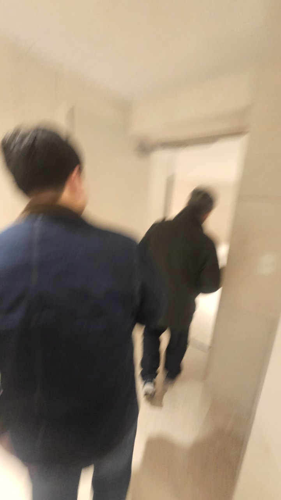
1
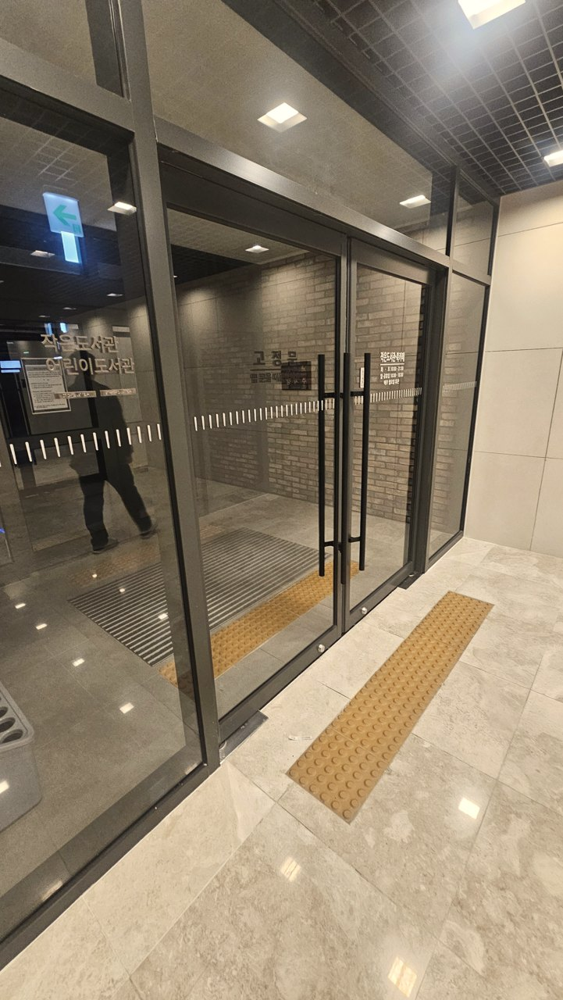
2
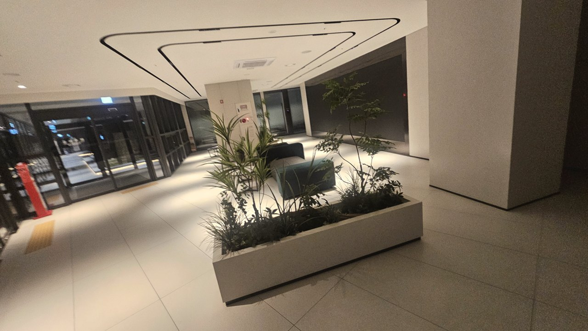
3
건물 안으로 → 유리문 입구 → 자정 넘은 로비다음 날, 다시 들으며
V.
민브로님 뵙고 배울 점
나의 복기 · 2026년 11월 27일
같은 테이블에 앉아 다른 것을 보고 계셨다
감자탕집, 통닭집, 술집에서
그날 하루를 보내고 다음 날 내가 적은 복기를 그대로 옮겼다. 저녁 무렵부터는 해량님도 함께 있었다.
i.관심과 관찰
감자탕집에 앉아서부터 끊임없이 테이블 전체를 살피신다.
대화를 나누면서도 술잔과 물잔을 계속 확인하신다.
감자탕 국물이 튀거나 뼈가 떨어지면 바로 휴지와 물티슈를 챙겨주신다.
통닭을 먹다가 손에 기름이 묻었을 때도 마찬가지였다.
그릇이나 앞접시가 필요한 순간에도 먼저 알아차리고 새것을 가져오신다.
누군가 요청하기 전에 이미 필요한 것을 파악하고 계신다.
대화에 참여하면서도 주변에서 일어나는 일들을 놓치지 않으신다.
하나에 집중하면 다른 것들을 놓치는 나와는 상당히 대조적이었다.
한 사람과 대화하면서도 테이블 전체를 보고 계시는 그 시야를 배우자.
ii선제적인 배려와 상황 판단
감자탕을 끓이면서 쫄면이나 떡이 국물을 흡수하기 전에 미리 빼놓으신다.
감자와 우거지를 가위로 먹기 좋은 크기로 잘라주신다.
뼈찜에 들어있는 김치와 두부도 마찬가지였다.
단순히 음식을 덜어주시는 것을 넘어 어떻게 하면 더 편하고 맛있게 먹을 수 있을지까지 고려하신다.
해량님께서 중간에 합류하시기 전에 필요한 것들을 미리 세팅해놓으신다.
해량님께서 오시자마자 술잔을 건네고 술을 따라주신다.
상황이 발생하고 나서 대응하는 것이 아니라 앞으로 발생할 상황까지 고려하고 계신다.
그 과정에서 다른 사람이 움직이거나 요청할 필요가 없게 만드신다.
상대방이 필요로 하는 것을 상대방보다 먼저 알아차리는 감각을 배우자.
묵은지 김치뼈찜과 두부 · 자리를 뜨기 전 테이블
iii.상대방에게 주는 안정감
작년에 뵈었을 때 느꼈던 안정감을 이번에도 느꼈다.
술잔을 채워주시고 음식을 챙겨주시는 것만으로 설명하기 어려운 감각이다.
술잔, 물잔, 음식, 수저, 앞접시 등 테이블에서 신경 써야 할 것들을 자연스럽게 해결해주신다.
그러면서도 대화의 흐름을 놓치지 않으신다.
무엇을 챙겨주고 있다는 티를 내거나 분위기를 끊지도 않으신다.
필요한 순간에 필요한 것들이 채워진다.
그러다 보니 옆에 있는 사람은 신경 써야 할 것들을 자연스럽게 내려놓게 된다.
나 역시 민브로님 옆에서 상당히 편안함을 느꼈다.
단순히 배려를 많이 하는 것과 상대방에게 안정감을 주는 것은 또 다른 것 같다.
여러 상황을 동시에 살피고 처리할 수 있는 사람에게서 오는 안정감이 있다.
내가 누군가에게 이런 안정감을 줄 수 있는 사람인지 생각해보자.
iv.호흡과 템포
어제 오랜 시간 함께 있었지만 민브로님의 말이 빨라지는 모습을 보지 못했다.
대화의 주제가 바뀌고 분위기가 바뀌어도 호흡과 템포가 크게 흔들리지 않으신다.
눈빛에서도 흔들림이 느껴지지 않았다.
말씀하실 때 가벼운 느낌이 들지 않는다.
말과 눈빛, 동작에서 전체적으로 묵직하게 잡아주는 느낌이 있다.
몸의 컨디션이 좋지 않으셨음에도 그 안정감을 유지하셨다.
술을 아예 드시지 않는 것이 아니라 함께 술자리를 즐기면서도 본인의 음주량을 조절하셨다.
몸의 상태와 술자리의 분위기, 본인의 호흡을 동시에 조절하고 계셨다.
술자리가 길어져도 그 무게감이 쉽게 무너지지 않았다.
반면 나는 대화가 조금만 내 프레임을 벗어나도 말이 빨라지고 호흡이 거칠어진다.
어제의 음성을 다시 들어보니 그 차이가 더욱 선명하게 느껴졌다.
단순히 말을 천천히 하는 것을 따라 하는 것이 아니라 그 호흡이 나올 수 있는 내면의 여유를 키워야 한다.